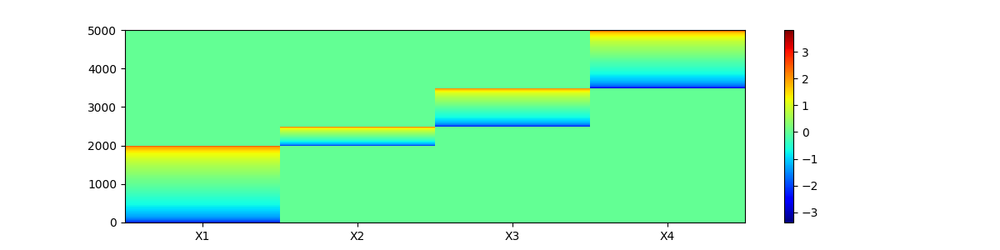
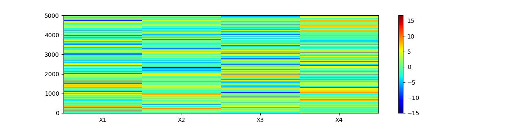
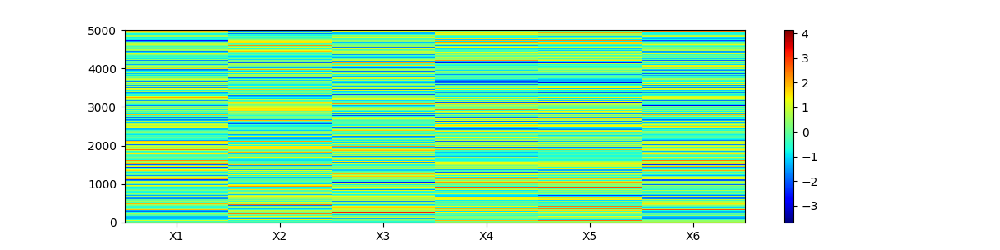
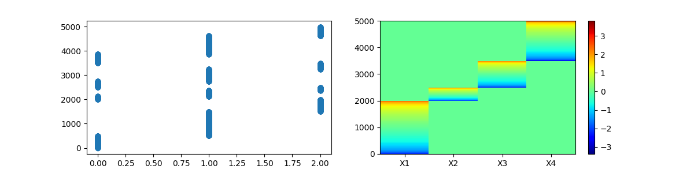
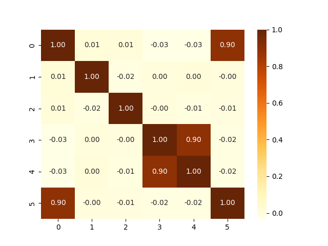
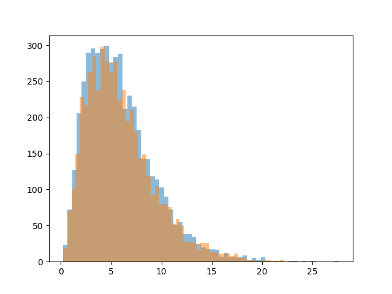
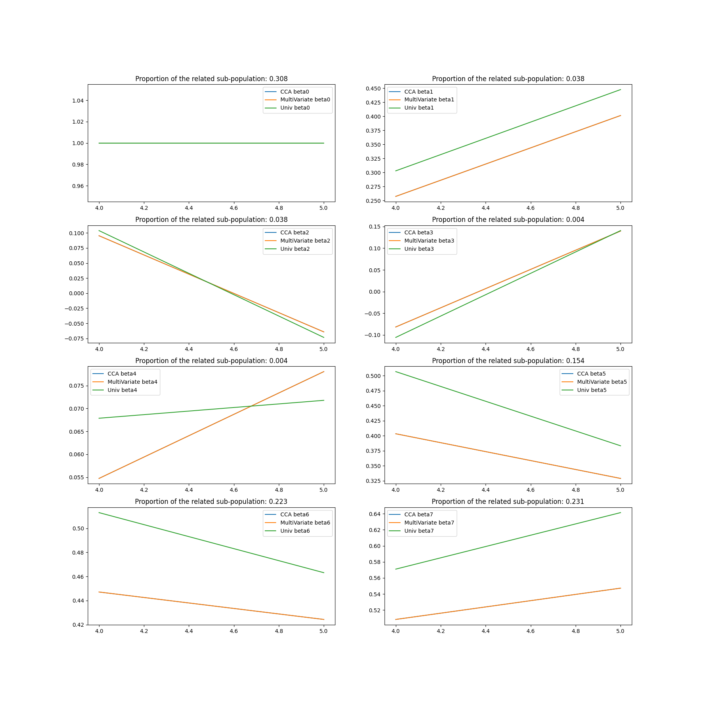
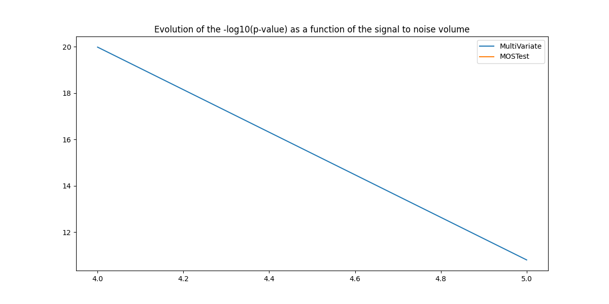

Note
Go to the end to download the full example code.
MOSTest¶
Eamplify MOSTest approach which performs a multi-phenotype GWAS.
The method was first introduced in this paper from [van der Meer, Nat. Comm.,2020](https://doi.org/10.1038/s41467-020-17368-1). The current example consider the situation where the phenotypes are linearly dependent.
import matplotlib.pyplot as plt
import numpy as np
import pandas as pd
import seaborn as sns
import statsmodels.api as sm
from scipy.stats import gamma, norm
from sklearn.cross_decomposition import CCA
from sklearn.preprocessing import StandardScaler
from tqdm.auto import tqdm
np.set_printoptions(suppress=False, precision=2)
Building the dataset¶
The multivariate phenotype¶
First, a multi variate phenotype is defined. Each trait is supposed to characterize a different sub-populations within the sample.
The number of traits is
 traits
traitsThe number of samples (subjects) is
 .
.
For example, each trait of the multivariate phenotype represents a dimension of a latent space, which are supposed to encode information for one specific part of the global population. For each sub-population is generated the data (matching in fact one dimension). For the first sub-population, the subjects have a value attributed. Those values follow a normal distribution. The subjects are sorted by increasing values. Then, all the other subjects have a 0 value. The same process is repeated for all the sub-populations.
For our simulation, and for each given trait, we will arbitrarily draw some
specific samples according to a distribution and will zero the other
samples. Without loss of generality we will consider the  first samples of trait
first samples of trait  (and zero the others), then we will
consider the
(and zero the others), then we will
consider the  samples following the ones of trait
samples following the ones of trait
 and zero the other samples, etc.
and zero the other samples, etc.
Then, a certain amount of noise is added.
# dimensions of the simulated data
m = 5000 # sample size
n_traits = 4 # number of uncorrelated traits
trait_names = [f'X{i}' for i in range(1, n_traits + 1)]
print(trait_names)
['X1', 'X2', 'X3', 'X4']
Set the size of the different sub-population of subjects in each trait
Now let’s generate the phenotypes
def generate_traits(trait_runlengthes, list_sigma=None, law='normal'):
"""
Generate traits based on a given distribution law.
Parameters
----------
trait_runlengthes: numpy array of integers
each representing the number of non zero samples for each trait.
list_sigma: list of floats
standard deviations for each trait.
law: string
distribution law to use ('normal' or 'gamma').
Returns
-------
mul_phenotype: 2D numpy array
each column containing the generated trait data.
"""
trait_runlengthes = np.array(trait_runlengthes)
if list_sigma is None:
list_sigma = [1 for i in range(len(trait_runlengthes))]
list_X = []
if law == 'normal':
for i in range(len(trait_runlengthes)):
X = np.concatenate([
np.zeros(trait_runlengthes[0:i].sum()),
np.sort(
np.random.normal(
loc=0,
scale=list_sigma[i],
size=trait_runlengthes[i]
)
),
np.zeros(
trait_runlengthes.sum() -
trait_runlengthes[0:i + 1].sum()
)
])
list_X.append(X)
elif law == 'gamma':
for i in range(len(trait_runlengthes)):
X = np.concatenate([
np.zeros(trait_runlengthes[0:i].sum()),
np.sort(
gamma.rvs(
a=2,
scale=list_sigma[i],
size=trait_runlengthes[i]
)
),
np.zeros(
trait_runlengthes.sum() -
trait_runlengthes[0:i + 1].sum()
)
])
list_X.append(X)
else:
raise ValueError(
"Unsupported distribution law. Use 'normal' or 'gamma'."
)
mul_phenotype = np.array(list_X).T
return mul_phenotype
mul_phenotype_latent = generate_traits(np.array([m1, m2, m3, m4]))
# we keep the "latent" for future plots
mul_phenotype = mul_phenotype_latent.copy()
# Mean and Variance
print('Mean for each column:', mul_phenotype.mean(axis=0))
print('Variance for each column:', mul_phenotype.var(axis=0))
fig, ax = plt.subplots(figsize=(12, 3))
c = ax.pcolor(mul_phenotype, cmap="jet") # or "viridis", "plasma", etc.
# Set ticks in the middle of each cell
ax.set_xticks(np.arange(0.5, mul_phenotype.shape[1], 1))
# Set tick labels
ax.set_xticklabels(trait_names)
fig.colorbar(c, ax=ax)

Mean for each column: [-0.01 0. -0.01 -0.01]
Variance for each column: [0.38 0.1 0.19 0.3 ]
<matplotlib.colorbar.Colorbar object at 0x7f92ed0e5100>
Let us add noise Sparse representation space with noise
noise = True
if noise:
for i in range(len(trait_names)):
mul_phenotype[:, i] += np.random.randn(m) * 4
fig, ax = plt.subplots(figsize=(12, 3))
c = ax.pcolor(mul_phenotype, cmap="jet") # or "viridis", "plasma", etc.
# Set ticks in the middle of each cell
ax.set_xticks(np.arange(0.5, mul_phenotype.shape[1], 1))
# Set tick labels
ax.set_xticklabels(trait_names)
fig.colorbar(c, ax=ax)

<matplotlib.colorbar.Colorbar object at 0x7f9305e11c10>
Let’s now add a duplicate of two columns.
n_traits += 2
trait_names = [f'X{i}' for i in range(1, n_traits + 1)]
print(trait_names)
mul_phenotype = np.hstack((mul_phenotype, np.tile(mul_phenotype[:, [-1]], 1)))
mul_phenotype = np.hstack((mul_phenotype, np.tile(mul_phenotype[:, [0]], 1)))
mul_phenotype[:, -1] += np.random.randn(m) * 2
mul_phenotype[:, -2] += np.random.randn(m) * 2
['X1', 'X2', 'X3', 'X4', 'X5', 'X6']
Mean and Variance
print(f"Mean for each column before scaling: {mul_phenotype.mean(axis=0)}")
print(f"Variance for each column before scaling: {mul_phenotype.var(axis=0)}")
scaler = StandardScaler()
mul_phenotype = scaler.fit_transform(mul_phenotype)
# Mean and Variance
print(f"Mean for each column before scaling: {mul_phenotype.mean(axis=0)}")
print(f"Variance for each column before scaling: {mul_phenotype.var(axis=0)}")
fig, ax = plt.subplots(figsize=(12, 3))
c = ax.pcolor(mul_phenotype, cmap="jet") # or "viridis", "plasma", etc.
# Set ticks in the middle of each cell
ax.set_xticks(np.arange(0.5, mul_phenotype.shape[1], 1))
# Set tick labels
ax.set_xticklabels(trait_names)
fig.colorbar(c, ax=ax)

Mean for each column before scaling: [ 0.06 0.04 -0.06 -0.04 -0.03 0.07]
Variance for each column before scaling: [16.05 15.4 15.93 16.44 19.98 20.17]
Mean for each column before scaling: [-1.95e-16 1.43e-17 1.70e-17 -3.21e-17 1.90e-17 4.88e-19]
Variance for each column before scaling: [1. 1. 1. 1. 1. 1.]
<matplotlib.colorbar.Colorbar object at 0x7f92ec82f2f0>
Definition of the genotype¶
Let’s define the genotype (one variant). The linspace will naturally corralate with the sorted traits. The genotype is defined to match the normal distribution, ie the subjects with a low value have a 0 as genotype, the subjects in the middle have a 1 and the subjects with a high value have a 2. The genotype correspond to the number of minor allele for a given fake SNP.
genotype = np.concatenate([
np.linspace(0, 2, m1), np.linspace(0, 2, m2), np.linspace(0, 2, m3),
np.linspace(0, 2, m4)
])
genotype = genotype.round()
Let’s plot the genotype and the (latent) multivariate phenotype
# two subplots
fig, axs = plt.subplots(1, 2, figsize=(12, 3))
axs[0].scatter(genotype, range(m))
c = axs[1].pcolor(mul_phenotype_latent, cmap="jet")
axs[1].set_xticks(np.arange(0.5, mul_phenotype_latent.shape[1], 1))
axs[1].set_xticklabels(trait_names[:-2])
fig.colorbar(c, ax=axs[1])

<matplotlib.colorbar.Colorbar object at 0x7f9305d00710>
A few description plots on the simulated data¶
Correlation between the different dimensions
corr = np.corrcoef(mul_phenotype, rowvar=False)
sns.heatmap(corr, cmap="YlOrBr", annot=True, fmt=".2f")

<Axes: >
Lets study the correlation between the different traits of the mul_phenotype and with the genotype one the one hand or a permuted genotype on the other hand
# Consider a pandas dataframe for better handling
mpheno_geno = pd.DataFrame(
mul_phenotype,
columns=[f'X{i}' for i in range(1, n_traits + 1)]
)
mpheno_geno['Genotype'] = genotype
mpheno_geno['PermGenotype'] = np.random.permutation(genotype)
print(mpheno_geno)
correlations = mpheno_geno.corr()
correlations[['Genotype', 'PermGenotype']].drop(['Genotype', 'PermGenotype'])
X1 X2 X3 ... X6 Genotype PermGenotype
0 -2.071658 -0.785726 0.659383 ... -1.702702 0.0 2.0
1 -2.069804 -0.525494 -1.323923 ... -1.744375 0.0 1.0
2 -1.015746 0.841376 -0.180449 ... -1.052612 0.0 1.0
3 -2.000121 0.154076 0.205381 ... -2.048415 0.0 0.0
4 -0.627697 0.041783 -1.191470 ... -0.612160 0.0 1.0
... ... ... ... ... ... ... ...
4995 0.060307 -0.533923 0.870494 ... 0.230365 2.0 0.0
4996 -1.722085 0.187488 -0.660964 ... -1.755311 2.0 1.0
4997 -0.911684 -1.019942 -1.356187 ... -0.723861 2.0 1.0
4998 0.611782 0.527024 -1.128781 ... 0.387655 2.0 0.0
4999 -0.625408 -0.458686 -0.278979 ... -0.466032 2.0 1.0
[5000 rows x 8 columns]
The MOSTest principles¶
Compute the classical association metrics¶
Also referred as “Univariate GWAS procedure” in [Van der Meer et al., 2022]
In order to obtain t-val, p-val of association of the genotype for each trait of the mul_phenotype a univariate regression is performed. The data frame mpheno_geno is used.
Can be seen from the results that the genotype predicts each dimension.
def UniVar_reg(mpheno_geno, traits):
geno = sm.add_constant(mpheno_geno['Genotype'])
list_betas_orig = []
list_z_score_orig = []
pd_list = []
for trait in traits:
model_orig = sm.OLS(mpheno_geno[trait], geno)
results_orig = model_orig.fit()
pd_list.append(pd.DataFrame(
{'Trait': [trait],
'Beta': [results_orig.params.iloc[1]],
't-value': [results_orig.tvalues.iloc[1]],
'p-value': [results_orig.pvalues.iloc[1]]}
)
)
list_betas_orig.append(results_orig.params.iloc[1])
list_z_score_orig.append(results_orig.tvalues.iloc[1])
results = pd.concat(pd_list, ignore_index=True)
results.set_index('Trait', inplace=True)
return results, list_betas_orig, list_z_score_orig
univariates_gwases, list_betas_orig, list_z_score_orig = UniVar_reg(
mpheno_geno, trait_names
)
print(univariates_gwases)
Beta t-value p-value
Trait
X1 0.154782 7.784322 8.459927e-15
X2 0.008044 0.402132 6.876042e-01
X3 0.054827 2.742863 6.112314e-03
X4 0.058854 2.944662 3.247977e-03
X5 0.044118 2.206542 2.739140e-02
X6 0.142092 7.139301 1.072687e-12
The Mahalanobis norm for $H_0$¶
The following function compute the Mahalanobis norm considering permuted genotype to assess the association under the null.
Retaining the notation of the Van der Meer’s paper, we define the
mahalanobis_norm_perm. The parameters are the mul_phenotype, the genotype
(here the mpheno_geno parameter). The nb_perm_pheno is to specify the number
of permutation. The  parameter is the correlation matrix of the
paper. Please note that is NOT computed the same way as in the
paper.
parameter is the correlation matrix of the
paper. Please note that is NOT computed the same way as in the
paper.
def mahalanobis_norm_perm(mpheno_geno, R, nb_perm_geno=1):
"""
Input:
mpheno_geno: pandas dataframe
contains the traits phenotype and the genotype data
('Genotype' column).
R: numpy array,
correlation matrix of the traits in mpheno_geno.
nb_perm_geno: int
Output:
list_mahalanobis_norm_perm: list of float
"""
list_mahalanobis_norm_perm = []
for _i in tqdm(range(nb_perm_geno), 'Permutation'):
mpheno_geno['PermGenotype'] = np.random.permutation(
mpheno_geno['Genotype']
)
perm_geno = sm.add_constant(mpheno_geno['PermGenotype'])
list_z_score_perm = []
traits = mpheno_geno.drop(
columns=["Genotype", "PermGenotype"]
).columns.tolist()
for trait in traits:
model_perm = sm.OLS(mpheno_geno[trait], perm_geno)
results_perm = model_perm.fit()
list_z_score_perm.append(results_perm.tvalues.iloc[1])
z_score_perm = np.array(list_z_score_perm)
mahalanobis_norm_perm = (
(z_score_perm @ np.linalg.inv(R)) @ z_score_perm.T
)
list_mahalanobis_norm_perm.append(mahalanobis_norm_perm)
return list_mahalanobis_norm_perm
nb_perm_geno = 2
list_mahalanobis_norm_perm = mahalanobis_norm_perm(
mpheno_geno, corr, nb_perm_geno
)
print(list_mahalanobis_norm_perm)
Permutation: 0%| | 0/2 [00:00<?, ?it/s]
Permutation: 100%|██████████| 2/2 [00:00<00:00, 121.70it/s]
[np.float64(6.512129266517958), np.float64(9.955400129121232)]
The MOSTest idea¶
The terms of the list list_mahalanobis_norm_perm contain values of the
statistics  of the paper.
They follow the distribution the two parameter distribution
of the paper.
They follow the distribution the two parameter distribution
 .
.
Let’s fit this gamma function.
def fit_gamma(list_mahalanobis_norm_perm, plot_fit=False):
"""
Fit a gamma distribution to the list of Mahalanobis norms.
Parameters
----------
list_mahalanobis_norm_perm: list of float,
Mahalanobis norms from permutations.
plot_fit: bool, optional,
whether to plot the fitted gamma distribution against the data.
Returns
-------
fitted_params: tuple,
parameters of the fitted gamma distribution
(fit_alpha, fit_loc, fit_scale).
"""
fit_alpha, fit_loc, fit_scale = gamma.fit(list_mahalanobis_norm_perm)
nb_perm_geno = len(list_mahalanobis_norm_perm)
if plot_fit:
plt.hist(
gamma.rvs(
a=fit_alpha, loc=fit_loc, scale=fit_scale, size=nb_perm_geno
),
alpha=0.5, bins=60
)
plt.hist(list_mahalanobis_norm_perm, alpha=0.5, bins=60)
return fit_alpha, fit_loc, fit_scale
# Generate a list of Mahalanobis norms from permutations
list_mahalanobis_norm_perm = mahalanobis_norm_perm(mpheno_geno, corr, 5000)
print('Distributions: blue is theoretical gamma and orange is the empirical '
'distribution of the Mahalanobis norms from permutations')
alpha, loc, scale = fit_gamma(list_mahalanobis_norm_perm, plot_fit=True)

Permutation: 0%| | 0/5000 [00:00<?, ?it/s]
Permutation: 0%| | 20/5000 [00:00<00:25, 193.43it/s]
Permutation: 1%| | 41/5000 [00:00<00:24, 201.63it/s]
Permutation: 1%| | 62/5000 [00:00<00:24, 199.66it/s]
Permutation: 2%|▏ | 82/5000 [00:00<00:25, 192.43it/s]
Permutation: 2%|▏ | 104/5000 [00:00<00:24, 198.79it/s]
Permutation: 3%|▎ | 126/5000 [00:00<00:24, 202.92it/s]
Permutation: 3%|▎ | 148/5000 [00:00<00:23, 205.91it/s]
Permutation: 3%|▎ | 170/5000 [00:00<00:23, 208.18it/s]
Permutation: 4%|▍ | 192/5000 [00:00<00:23, 208.97it/s]
Permutation: 4%|▍ | 214/5000 [00:01<00:22, 209.80it/s]
Permutation: 5%|▍ | 235/5000 [00:01<00:22, 209.79it/s]
Permutation: 5%|▌ | 257/5000 [00:01<00:22, 210.08it/s]
Permutation: 6%|▌ | 279/5000 [00:01<00:22, 210.80it/s]
Permutation: 6%|▌ | 301/5000 [00:01<00:22, 211.32it/s]
Permutation: 6%|▋ | 323/5000 [00:01<00:22, 211.17it/s]
Permutation: 7%|▋ | 345/5000 [00:01<00:22, 210.67it/s]
Permutation: 7%|▋ | 367/5000 [00:01<00:22, 201.94it/s]
Permutation: 8%|▊ | 389/5000 [00:01<00:22, 204.88it/s]
Permutation: 8%|▊ | 411/5000 [00:01<00:22, 206.98it/s]
Permutation: 9%|▊ | 433/5000 [00:02<00:21, 208.31it/s]
Permutation: 9%|▉ | 455/5000 [00:02<00:21, 208.96it/s]
Permutation: 10%|▉ | 477/5000 [00:02<00:21, 209.62it/s]
Permutation: 10%|▉ | 499/5000 [00:02<00:21, 210.17it/s]
Permutation: 10%|█ | 521/5000 [00:02<00:21, 210.07it/s]
Permutation: 11%|█ | 543/5000 [00:02<00:21, 210.07it/s]
Permutation: 11%|█▏ | 565/5000 [00:02<00:21, 210.23it/s]
Permutation: 12%|█▏ | 587/5000 [00:02<00:20, 210.48it/s]
Permutation: 12%|█▏ | 609/5000 [00:02<00:20, 210.65it/s]
Permutation: 13%|█▎ | 631/5000 [00:03<00:20, 211.08it/s]
Permutation: 13%|█▎ | 653/5000 [00:03<00:20, 211.01it/s]
Permutation: 14%|█▎ | 675/5000 [00:03<00:20, 210.95it/s]
Permutation: 14%|█▍ | 697/5000 [00:03<00:20, 205.62it/s]
Permutation: 14%|█▍ | 718/5000 [00:03<00:20, 205.25it/s]
Permutation: 15%|█▍ | 739/5000 [00:03<00:20, 203.86it/s]
Permutation: 15%|█▌ | 761/5000 [00:03<00:20, 206.36it/s]
Permutation: 16%|█▌ | 783/5000 [00:03<00:20, 207.94it/s]
Permutation: 16%|█▌ | 805/5000 [00:03<00:20, 208.88it/s]
Permutation: 17%|█▋ | 827/5000 [00:03<00:19, 209.87it/s]
Permutation: 17%|█▋ | 849/5000 [00:04<00:19, 210.47it/s]
Permutation: 17%|█▋ | 871/5000 [00:04<00:19, 210.45it/s]
Permutation: 18%|█▊ | 893/5000 [00:04<00:19, 210.81it/s]
Permutation: 18%|█▊ | 915/5000 [00:04<00:19, 210.37it/s]
Permutation: 19%|█▊ | 937/5000 [00:04<00:19, 210.93it/s]
Permutation: 19%|█▉ | 959/5000 [00:04<00:19, 211.29it/s]
Permutation: 20%|█▉ | 981/5000 [00:04<00:19, 211.28it/s]
Permutation: 20%|██ | 1003/5000 [00:04<00:18, 211.04it/s]
Permutation: 20%|██ | 1025/5000 [00:04<00:18, 210.16it/s]
Permutation: 21%|██ | 1047/5000 [00:05<00:18, 210.29it/s]
Permutation: 21%|██▏ | 1069/5000 [00:05<00:18, 210.42it/s]
Permutation: 22%|██▏ | 1091/5000 [00:05<00:18, 209.53it/s]
Permutation: 22%|██▏ | 1112/5000 [00:05<00:18, 209.28it/s]
Permutation: 23%|██▎ | 1133/5000 [00:05<00:18, 208.78it/s]
Permutation: 23%|██▎ | 1154/5000 [00:05<00:18, 208.49it/s]
Permutation: 24%|██▎ | 1175/5000 [00:05<00:18, 208.61it/s]
Permutation: 24%|██▍ | 1196/5000 [00:05<00:18, 208.92it/s]
Permutation: 24%|██▍ | 1217/5000 [00:05<00:18, 209.21it/s]
Permutation: 25%|██▍ | 1238/5000 [00:05<00:18, 207.66it/s]
Permutation: 25%|██▌ | 1259/5000 [00:06<00:17, 208.08it/s]
Permutation: 26%|██▌ | 1280/5000 [00:06<00:17, 207.50it/s]
Permutation: 26%|██▌ | 1301/5000 [00:06<00:17, 207.89it/s]
Permutation: 26%|██▋ | 1322/5000 [00:06<00:17, 208.41it/s]
Permutation: 27%|██▋ | 1343/5000 [00:06<00:17, 207.69it/s]
Permutation: 27%|██▋ | 1364/5000 [00:06<00:17, 206.80it/s]
Permutation: 28%|██▊ | 1385/5000 [00:06<00:17, 207.58it/s]
Permutation: 28%|██▊ | 1407/5000 [00:06<00:17, 208.86it/s]
Permutation: 29%|██▊ | 1429/5000 [00:06<00:17, 209.91it/s]
Permutation: 29%|██▉ | 1451/5000 [00:06<00:16, 210.66it/s]
Permutation: 29%|██▉ | 1473/5000 [00:07<00:16, 210.36it/s]
Permutation: 30%|██▉ | 1495/5000 [00:07<00:16, 210.21it/s]
Permutation: 30%|███ | 1517/5000 [00:07<00:16, 209.29it/s]
Permutation: 31%|███ | 1538/5000 [00:07<00:16, 209.04it/s]
Permutation: 31%|███ | 1560/5000 [00:07<00:16, 210.06it/s]
Permutation: 32%|███▏ | 1582/5000 [00:07<00:16, 208.90it/s]
Permutation: 32%|███▏ | 1603/5000 [00:07<00:16, 208.64it/s]
Permutation: 32%|███▏ | 1624/5000 [00:07<00:16, 208.83it/s]
Permutation: 33%|███▎ | 1645/5000 [00:07<00:16, 209.10it/s]
Permutation: 33%|███▎ | 1666/5000 [00:07<00:15, 209.03it/s]
Permutation: 34%|███▍ | 1688/5000 [00:08<00:15, 209.49it/s]
Permutation: 34%|███▍ | 1709/5000 [00:08<00:15, 206.68it/s]
Permutation: 35%|███▍ | 1731/5000 [00:08<00:15, 208.15it/s]
Permutation: 35%|███▌ | 1753/5000 [00:08<00:15, 209.15it/s]
Permutation: 36%|███▌ | 1775/5000 [00:08<00:15, 209.50it/s]
Permutation: 36%|███▌ | 1796/5000 [00:08<00:15, 209.56it/s]
Permutation: 36%|███▋ | 1818/5000 [00:08<00:15, 209.75it/s]
Permutation: 37%|███▋ | 1840/5000 [00:08<00:15, 210.24it/s]
Permutation: 37%|███▋ | 1862/5000 [00:08<00:14, 210.40it/s]
Permutation: 38%|███▊ | 1884/5000 [00:09<00:14, 210.32it/s]
Permutation: 38%|███▊ | 1906/5000 [00:09<00:14, 209.90it/s]
Permutation: 39%|███▊ | 1927/5000 [00:09<00:14, 207.16it/s]
Permutation: 39%|███▉ | 1948/5000 [00:09<00:14, 206.15it/s]
Permutation: 39%|███▉ | 1969/5000 [00:09<00:14, 206.80it/s]
Permutation: 40%|███▉ | 1990/5000 [00:09<00:14, 207.06it/s]
Permutation: 40%|████ | 2011/5000 [00:09<00:14, 206.76it/s]
Permutation: 41%|████ | 2032/5000 [00:09<00:14, 207.08it/s]
Permutation: 41%|████ | 2053/5000 [00:09<00:14, 207.13it/s]
Permutation: 41%|████▏ | 2074/5000 [00:09<00:14, 205.87it/s]
Permutation: 42%|████▏ | 2095/5000 [00:10<00:14, 205.03it/s]
Permutation: 42%|████▏ | 2116/5000 [00:10<00:14, 205.63it/s]
Permutation: 43%|████▎ | 2137/5000 [00:10<00:13, 206.09it/s]
Permutation: 43%|████▎ | 2158/5000 [00:10<00:13, 207.23it/s]
Permutation: 44%|████▎ | 2179/5000 [00:10<00:13, 207.93it/s]
Permutation: 44%|████▍ | 2201/5000 [00:10<00:13, 208.84it/s]
Permutation: 44%|████▍ | 2222/5000 [00:10<00:13, 209.01it/s]
Permutation: 45%|████▍ | 2244/5000 [00:10<00:13, 209.57it/s]
Permutation: 45%|████▌ | 2265/5000 [00:10<00:13, 209.54it/s]
Permutation: 46%|████▌ | 2286/5000 [00:10<00:12, 208.95it/s]
Permutation: 46%|████▌ | 2307/5000 [00:11<00:12, 208.66it/s]
Permutation: 47%|████▋ | 2328/5000 [00:11<00:12, 208.00it/s]
Permutation: 47%|████▋ | 2349/5000 [00:11<00:12, 207.73it/s]
Permutation: 47%|████▋ | 2371/5000 [00:11<00:12, 208.51it/s]
Permutation: 48%|████▊ | 2393/5000 [00:11<00:12, 209.25it/s]
Permutation: 48%|████▊ | 2414/5000 [00:11<00:12, 209.44it/s]
Permutation: 49%|████▊ | 2435/5000 [00:11<00:12, 209.35it/s]
Permutation: 49%|████▉ | 2456/5000 [00:11<00:12, 209.51it/s]
Permutation: 50%|████▉ | 2478/5000 [00:11<00:12, 210.15it/s]
Permutation: 50%|█████ | 2500/5000 [00:11<00:11, 210.44it/s]
Permutation: 50%|█████ | 2522/5000 [00:12<00:11, 210.78it/s]
Permutation: 51%|█████ | 2544/5000 [00:12<00:11, 210.80it/s]
Permutation: 51%|█████▏ | 2566/5000 [00:12<00:11, 210.16it/s]
Permutation: 52%|█████▏ | 2588/5000 [00:12<00:11, 209.63it/s]
Permutation: 52%|█████▏ | 2609/5000 [00:12<00:11, 208.69it/s]
Permutation: 53%|█████▎ | 2630/5000 [00:12<00:11, 208.80it/s]
Permutation: 53%|█████▎ | 2651/5000 [00:12<00:11, 209.06it/s]
Permutation: 53%|█████▎ | 2673/5000 [00:12<00:11, 209.62it/s]
Permutation: 54%|█████▍ | 2695/5000 [00:12<00:10, 209.99it/s]
Permutation: 54%|█████▍ | 2717/5000 [00:13<00:10, 210.19it/s]
Permutation: 55%|█████▍ | 2739/5000 [00:13<00:10, 210.49it/s]
Permutation: 55%|█████▌ | 2761/5000 [00:13<00:10, 209.97it/s]
Permutation: 56%|█████▌ | 2782/5000 [00:13<00:10, 209.94it/s]
Permutation: 56%|█████▌ | 2803/5000 [00:13<00:10, 209.84it/s]
Permutation: 56%|█████▋ | 2824/5000 [00:13<00:10, 209.63it/s]
Permutation: 57%|█████▋ | 2845/5000 [00:13<00:10, 209.63it/s]
Permutation: 57%|█████▋ | 2867/5000 [00:13<00:10, 209.75it/s]
Permutation: 58%|█████▊ | 2889/5000 [00:13<00:10, 210.18it/s]
Permutation: 58%|█████▊ | 2911/5000 [00:13<00:09, 210.07it/s]
Permutation: 59%|█████▊ | 2933/5000 [00:14<00:09, 210.00it/s]
Permutation: 59%|█████▉ | 2955/5000 [00:14<00:09, 208.82it/s]
Permutation: 60%|█████▉ | 2977/5000 [00:14<00:09, 209.52it/s]
Permutation: 60%|█████▉ | 2998/5000 [00:14<00:09, 209.38it/s]
Permutation: 60%|██████ | 3020/5000 [00:14<00:09, 209.86it/s]
Permutation: 61%|██████ | 3042/5000 [00:14<00:09, 210.27it/s]
Permutation: 61%|██████▏ | 3064/5000 [00:14<00:09, 210.32it/s]
Permutation: 62%|██████▏ | 3086/5000 [00:14<00:09, 210.73it/s]
Permutation: 62%|██████▏ | 3108/5000 [00:14<00:08, 211.06it/s]
Permutation: 63%|██████▎ | 3130/5000 [00:14<00:08, 210.89it/s]
Permutation: 63%|██████▎ | 3152/5000 [00:15<00:08, 211.36it/s]
Permutation: 63%|██████▎ | 3174/5000 [00:15<00:08, 210.98it/s]
Permutation: 64%|██████▍ | 3196/5000 [00:15<00:08, 210.72it/s]
Permutation: 64%|██████▍ | 3218/5000 [00:15<00:08, 210.47it/s]
Permutation: 65%|██████▍ | 3240/5000 [00:15<00:08, 210.27it/s]
Permutation: 65%|██████▌ | 3262/5000 [00:15<00:08, 210.01it/s]
Permutation: 66%|██████▌ | 3284/5000 [00:15<00:08, 209.52it/s]
Permutation: 66%|██████▌ | 3305/5000 [00:15<00:08, 209.25it/s]
Permutation: 67%|██████▋ | 3326/5000 [00:15<00:08, 208.89it/s]
Permutation: 67%|██████▋ | 3347/5000 [00:16<00:07, 208.31it/s]
Permutation: 67%|██████▋ | 3368/5000 [00:16<00:07, 208.48it/s]
Permutation: 68%|██████▊ | 3389/5000 [00:16<00:07, 208.14it/s]
Permutation: 68%|██████▊ | 3410/5000 [00:16<00:07, 206.72it/s]
Permutation: 69%|██████▊ | 3431/5000 [00:16<00:07, 207.68it/s]
Permutation: 69%|██████▉ | 3453/5000 [00:16<00:07, 208.65it/s]
Permutation: 70%|██████▉ | 3475/5000 [00:16<00:07, 209.64it/s]
Permutation: 70%|██████▉ | 3497/5000 [00:16<00:07, 210.56it/s]
Permutation: 70%|███████ | 3519/5000 [00:16<00:07, 211.02it/s]
Permutation: 71%|███████ | 3541/5000 [00:16<00:06, 211.20it/s]
Permutation: 71%|███████▏ | 3563/5000 [00:17<00:06, 210.60it/s]
Permutation: 72%|███████▏ | 3585/5000 [00:17<00:06, 210.61it/s]
Permutation: 72%|███████▏ | 3607/5000 [00:17<00:06, 210.49it/s]
Permutation: 73%|███████▎ | 3629/5000 [00:17<00:06, 210.37it/s]
Permutation: 73%|███████▎ | 3651/5000 [00:17<00:06, 209.74it/s]
Permutation: 73%|███████▎ | 3673/5000 [00:17<00:06, 210.35it/s]
Permutation: 74%|███████▍ | 3695/5000 [00:17<00:06, 210.58it/s]
Permutation: 74%|███████▍ | 3717/5000 [00:17<00:06, 210.20it/s]
Permutation: 75%|███████▍ | 3739/5000 [00:17<00:05, 210.34it/s]
Permutation: 75%|███████▌ | 3761/5000 [00:17<00:05, 210.79it/s]
Permutation: 76%|███████▌ | 3783/5000 [00:18<00:05, 210.30it/s]
Permutation: 76%|███████▌ | 3805/5000 [00:18<00:05, 209.82it/s]
Permutation: 77%|███████▋ | 3827/5000 [00:18<00:05, 210.12it/s]
Permutation: 77%|███████▋ | 3849/5000 [00:18<00:05, 209.69it/s]
Permutation: 77%|███████▋ | 3870/5000 [00:18<00:05, 209.46it/s]
Permutation: 78%|███████▊ | 3892/5000 [00:18<00:05, 210.17it/s]
Permutation: 78%|███████▊ | 3914/5000 [00:18<00:05, 210.15it/s]
Permutation: 79%|███████▊ | 3936/5000 [00:18<00:05, 210.54it/s]
Permutation: 79%|███████▉ | 3958/5000 [00:18<00:04, 211.06it/s]
Permutation: 80%|███████▉ | 3980/5000 [00:19<00:04, 210.98it/s]
Permutation: 80%|████████ | 4002/5000 [00:19<00:04, 211.35it/s]
Permutation: 80%|████████ | 4024/5000 [00:19<00:04, 211.00it/s]
Permutation: 81%|████████ | 4046/5000 [00:19<00:04, 208.84it/s]
Permutation: 81%|████████▏ | 4067/5000 [00:19<00:04, 208.73it/s]
Permutation: 82%|████████▏ | 4088/5000 [00:19<00:04, 208.59it/s]
Permutation: 82%|████████▏ | 4109/5000 [00:19<00:04, 208.83it/s]
Permutation: 83%|████████▎ | 4131/5000 [00:19<00:04, 209.42it/s]
Permutation: 83%|████████▎ | 4152/5000 [00:19<00:04, 209.41it/s]
Permutation: 83%|████████▎ | 4173/5000 [00:19<00:03, 209.38it/s]
Permutation: 84%|████████▍ | 4195/5000 [00:20<00:03, 209.59it/s]
Permutation: 84%|████████▍ | 4216/5000 [00:20<00:03, 209.31it/s]
Permutation: 85%|████████▍ | 4237/5000 [00:20<00:03, 209.40it/s]
Permutation: 85%|████████▌ | 4259/5000 [00:20<00:03, 209.79it/s]
Permutation: 86%|████████▌ | 4280/5000 [00:20<00:03, 209.57it/s]
Permutation: 86%|████████▌ | 4301/5000 [00:20<00:03, 209.01it/s]
Permutation: 86%|████████▋ | 4322/5000 [00:20<00:03, 209.30it/s]
Permutation: 87%|████████▋ | 4343/5000 [00:20<00:03, 209.10it/s]
Permutation: 87%|████████▋ | 4365/5000 [00:20<00:03, 209.86it/s]
Permutation: 88%|████████▊ | 4386/5000 [00:20<00:02, 209.00it/s]
Permutation: 88%|████████▊ | 4407/5000 [00:21<00:02, 207.69it/s]
Permutation: 89%|████████▊ | 4428/5000 [00:21<00:02, 206.14it/s]
Permutation: 89%|████████▉ | 4449/5000 [00:21<00:02, 206.05it/s]
Permutation: 89%|████████▉ | 4470/5000 [00:21<00:02, 206.44it/s]
Permutation: 90%|████████▉ | 4491/5000 [00:21<00:02, 205.69it/s]
Permutation: 90%|█████████ | 4512/5000 [00:21<00:02, 205.22it/s]
Permutation: 91%|█████████ | 4533/5000 [00:21<00:02, 206.05it/s]
Permutation: 91%|█████████ | 4554/5000 [00:21<00:02, 206.82it/s]
Permutation: 92%|█████████▏| 4576/5000 [00:21<00:02, 207.92it/s]
Permutation: 92%|█████████▏| 4598/5000 [00:22<00:01, 208.74it/s]
Permutation: 92%|█████████▏| 4619/5000 [00:22<00:01, 208.76it/s]
Permutation: 93%|█████████▎| 4640/5000 [00:22<00:01, 208.49it/s]
Permutation: 93%|█████████▎| 4662/5000 [00:22<00:01, 209.01it/s]
Permutation: 94%|█████████▎| 4684/5000 [00:22<00:01, 209.76it/s]
Permutation: 94%|█████████▍| 4705/5000 [00:22<00:01, 209.19it/s]
Permutation: 95%|█████████▍| 4726/5000 [00:22<00:01, 209.13it/s]
Permutation: 95%|█████████▍| 4747/5000 [00:22<00:01, 209.00it/s]
Permutation: 95%|█████████▌| 4768/5000 [00:22<00:01, 209.18it/s]
Permutation: 96%|█████████▌| 4789/5000 [00:22<00:01, 209.14it/s]
Permutation: 96%|█████████▌| 4810/5000 [00:23<00:00, 209.14it/s]
Permutation: 97%|█████████▋| 4832/5000 [00:23<00:00, 209.38it/s]
Permutation: 97%|█████████▋| 4853/5000 [00:23<00:00, 207.39it/s]
Permutation: 97%|█████████▋| 4874/5000 [00:23<00:00, 207.19it/s]
Permutation: 98%|█████████▊| 4895/5000 [00:23<00:00, 207.65it/s]
Permutation: 98%|█████████▊| 4917/5000 [00:23<00:00, 208.67it/s]
Permutation: 99%|█████████▉| 4939/5000 [00:23<00:00, 209.15it/s]
Permutation: 99%|█████████▉| 4960/5000 [00:23<00:00, 208.59it/s]
Permutation: 100%|█████████▉| 4981/5000 [00:23<00:00, 208.64it/s]
Permutation: 100%|██████████| 5000/5000 [00:23<00:00, 208.94it/s]
Distributions: blue is theoretical gamma and orange is the empirical distribution of the Mahalanobis norms from permutations
Then the MOSTest p-val is based on:
the observed “Mahalanobis combination” of the classical associations with the traits of the mul_phenotype (and using correctly ordered phenotype)
the cdf of the distribution of the “Mahalanobis combination” built empirically using permuted genoype.
Knowing this cdf is a gamma function, the p-val is the integral of the tail of the cdf higher than the observed value.
def MOSTest(z_score_observed, R, fit_alpha, fit_loc, fit_scale):
""" Perform the MOSTest using the original z-scores and the fitted gamma
distribution.
Parameters
----------
z_score_observed: list of float,
original z-scores from the univariate GWAS.
R: numpy array,
correlation matrix of the traits.
fit_alpha: float,
shape parameter of the fitted gamma distribution.
fit_loc: float,
location parameter of the fitted gamma distribution.
fit_scale: float,
scale parameter of the fitted gamma distribution.
Returns
-------
p_value_orig: float,
p-value from the MOSTest.
"""
z_score_orig = z_score_observed
print(f'Observed associations: {z_score_orig}')
mahalanobis_norm_orig = (z_score_orig @ np.linalg.inv(R)) @ z_score_orig.T
print(f'Mahalanobis norm on obseved associations: {mahalanobis_norm_orig}')
p_value_orig = (1 - gamma.cdf(
mahalanobis_norm_orig, a=fit_alpha, loc=fit_loc, scale=fit_scale)
)
print(f'MOSTEST p-value: {p_value_orig}')
return p_value_orig
# Perform the MOSTest
z_score_observed = univariates_gwases['t-value'].values
p_val = MOSTest(z_score_observed, corr, alpha, loc, scale)
Observed associations: [7.78 0.4 2.74 2.94 2.21 7.14]
Mahalanobis norm on obseved associations: 79.2184272188377
MOSTEST p-value: 2.7755575615628914e-15
Comparison of the methods¶
Univariate regression: Each dimension predicts the genotype¶
list_betas = []
pd_list = []
for trait in [f'X{i}' for i in range(1, n_traits + 1)]:
dim = sm.add_constant(mpheno_geno[trait])
model = sm.OLS(mpheno_geno['Genotype'], dim)
results = model.fit()
pd_list.append(pd.DataFrame(
{'Trait': [trait],
'Beta': [results.params.iloc[1]],
't-value': [results.tvalues.iloc[1]],
'p-value': [results.pvalues.iloc[1]]}
))
univariate = pd.concat(pd_list, ignore_index=True)
univariate.set_index('Trait', inplace=True)
print(univariate)
Beta t-value p-value
Trait
X1 0.077391 7.784322 8.459927e-15
X2 0.004022 0.402132 6.876042e-01
X3 0.027413 2.742863 6.112314e-03
X4 0.029427 2.944662 3.247977e-03
X5 0.022059 2.206542 2.739140e-02
X6 0.071046 7.139301 1.072687e-12
Multivariate regression: set of dimension to predict the genotype (linear)¶
Multivariate regression: set of dimension to predict the genotype (linear)
pheno = sm.add_constant(mpheno_geno[[f'X{i}' for i in range(1, n_traits + 1)]])
model = sm.OLS(mpheno_geno['Genotype'], pheno)
results = model.fit()
# print("Estimated betas:", '\n', results.params, '\n') # to get the betas
# print("t_values:", '\n', results.tvalues, '\n') # in fact also the z-score
# print("P-values:", '\n', results.pvalues, '\n')
np.array(
results.params[[f'X{i}' for i in range(1, n_traits + 1)]].to_list()
) / results.params['X1']
multivariate = pd.DataFrame({
'Beta': results.params[['const'] + [
f'X{i}' for i in range(1, n_traits + 1)]],
't-values': results.tvalues[['const'] + [
f'X{i}' for i in range(1, n_traits + 1)]],
'p-values': results.pvalues[['const'] + [
f'X{i}' for i in range(1, n_traits + 1)]]
})
print(multivariate)
Beta t-values p-values
const 1.000000 100.723713 0.000000
X1 0.071238 3.153797 0.001621
X2 0.003840 0.386523 0.699126
X3 0.027070 2.724846 0.006456
X4 0.050252 2.239129 0.025191
X5 -0.020398 -0.909051 0.363367
X6 0.007738 0.342705 0.731835
Multivariate regression: set of dimension to predict the genotype (CCA)¶
The coefficients of the linear model such that Y is approximated as

cca = CCA(n_components=1)
cca.fit(pheno, mpheno_geno['Genotype'])
# print(cca.coef_.shape)
# print(np.array(cca.coef_[0, 1:])/cca.coef_[0, 1]) # The coefficients of the
# linear model such that Y is approximated as Y = X @ coef_.T + intercept_.
coef_cca = pd.DataFrame({
'normalized loadings': list(np.array(cca.coef_[0, 1:]) / cca.coef_[0, 1])
})
coef_cca.index = [f'X{i}' for i in range(1, n_traits + 1)]
coef_cca.index.name = 'Trait'
print(coef_cca)
normalized loadings
Trait
X1 1.000000
X2 0.053898
X3 0.380000
X4 0.705411
X5 -0.286332
X6 0.108624
General study¶
# dimensions of the simulated data
m = 13000 # sample size
n_traits = 8 # number of dimensions
trait_names = [f'X{i}' for i in range(1, n_traits + 1)]
# Number of subjects (different sub-population) in each trait
dic_m = {"m1": 4000,
"m2": 500,
"m3": 500,
"m4": 50,
"m5": 50,
"m6": 2000,
"m7": 2900,
"m8": 3000} # m8 = m -m1 -m2 -m3 -m4 -m5 -m6 -m7
Generate the n_traits sparse phenotypes
study_X = generate_traits(np.array(list(dic_m.values())))
study_corr = np.corrcoef(study_X, rowvar=False)
Generate the associated genotypes (one per sub-population)
study_genotype = np.concatenate([
np.linspace(0, 2, dic_m["m1"]), np.linspace(0, 2, dic_m["m2"]),
np.linspace(0, 2, dic_m["m3"]), np.linspace(0, 2, dic_m["m4"]),
np.linspace(0, 2, dic_m["m5"]), np.linspace(0, 2, dic_m["m6"]),
np.linspace(0, 2, dic_m["m7"]), np.linspace(0, 2, dic_m["m8"])
])
study_genotype = study_genotype.round()
list_noise = np.linspace(4, 5, 2)
list_most_pval = []
list_multi_pval = []
dic_univ_betas = {}
dic_multiv_betas = {}
dic_cca_betas = {}
dic_fake_h2 = {}
for noise_level in list_noise:
fake_h2 = []
for i in range(n_traits):
rand_noise = 2 * np.random.rand()
study_X[:, i] += np.random.randn(m) * (noise_level + rand_noise)
fake_h2.append(
dic_m[f"m{i + 1}"] / np.array(
list(dic_m.values())
).sum() * (noise_level + rand_noise)**2
)
dic_fake_h2[noise_level] = fake_h2
mpheno_geno = pd.DataFrame(
study_X,
columns=[f'X{i}' for i in range(1, n_traits + 1)]
)
mpheno_geno['Genotype'] = study_genotype
list_mahalanobis_norm_perm = mahalanobis_norm_perm(
mpheno_geno, study_corr, nb_perm_geno=5000
)
univariates_gwases, list_betas_orig, list_z_score_orig = UniVar_reg(
mpheno_geno, trait_names
)
z_score_observed = univariates_gwases['t-value'].values
dic_univ_betas[noise_level] = (
np.array(z_score_observed) / z_score_observed[0]
)
alpha, loc, scale = fit_gamma(list_mahalanobis_norm_perm, plot_fit=False)
most_pval = MOSTest(z_score_observed, study_corr, alpha, loc, scale)
list_most_pval.append(most_pval)
pheno = sm.add_constant(
mpheno_geno[[f'X{i}' for i in range(1, n_traits + 1)]]
)
model = sm.OLS(mpheno_geno['Genotype'], pheno)
results = model.fit()
multi_pval = results.f_pvalue
dic_multiv_betas[noise_level] = np.array(
results.params[[f'X{i}' for i in range(1, n_traits + 1)]].to_list()
) / results.params['X1']
list_multi_pval.append(multi_pval)
cca = CCA(n_components=1)
cca.fit(pheno, mpheno_geno['Genotype'])
dic_cca_betas[noise_level] = np.array(cca.coef_[0, 1:]) / cca.coef_[0, 1]
Permutation: 0%| | 0/5000 [00:00<?, ?it/s]
Permutation: 0%| | 8/5000 [00:00<01:04, 77.73it/s]
Permutation: 0%| | 17/5000 [00:00<01:00, 82.32it/s]
Permutation: 1%| | 27/5000 [00:00<00:55, 89.40it/s]
Permutation: 1%| | 37/5000 [00:00<00:54, 91.36it/s]
Permutation: 1%| | 47/5000 [00:00<00:52, 93.74it/s]
Permutation: 1%| | 57/5000 [00:00<00:52, 94.56it/s]
Permutation: 1%|▏ | 67/5000 [00:00<00:51, 95.27it/s]
Permutation: 2%|▏ | 77/5000 [00:00<00:51, 95.93it/s]
Permutation: 2%|▏ | 87/5000 [00:00<00:50, 96.78it/s]
Permutation: 2%|▏ | 97/5000 [00:01<00:50, 96.85it/s]
Permutation: 2%|▏ | 107/5000 [00:01<00:50, 96.44it/s]
Permutation: 2%|▏ | 117/5000 [00:01<00:50, 96.39it/s]
Permutation: 3%|▎ | 127/5000 [00:01<00:51, 95.30it/s]
Permutation: 3%|▎ | 137/5000 [00:01<00:50, 95.45it/s]
Permutation: 3%|▎ | 147/5000 [00:01<00:50, 95.99it/s]
Permutation: 3%|▎ | 157/5000 [00:01<00:50, 96.74it/s]
Permutation: 3%|▎ | 167/5000 [00:01<00:50, 96.48it/s]
Permutation: 4%|▎ | 177/5000 [00:01<00:50, 95.70it/s]
Permutation: 4%|▎ | 187/5000 [00:01<00:50, 94.67it/s]
Permutation: 4%|▍ | 197/5000 [00:02<00:50, 94.27it/s]
Permutation: 4%|▍ | 207/5000 [00:02<00:50, 94.56it/s]
Permutation: 4%|▍ | 217/5000 [00:02<00:50, 94.38it/s]
Permutation: 5%|▍ | 227/5000 [00:02<00:50, 94.45it/s]
Permutation: 5%|▍ | 237/5000 [00:02<00:50, 94.40it/s]
Permutation: 5%|▍ | 247/5000 [00:02<00:50, 94.73it/s]
Permutation: 5%|▌ | 257/5000 [00:02<00:50, 94.80it/s]
Permutation: 5%|▌ | 267/5000 [00:02<00:49, 94.88it/s]
Permutation: 6%|▌ | 277/5000 [00:02<00:49, 94.88it/s]
Permutation: 6%|▌ | 287/5000 [00:03<00:49, 94.94it/s]
Permutation: 6%|▌ | 297/5000 [00:03<00:49, 95.19it/s]
Permutation: 6%|▌ | 307/5000 [00:03<00:49, 95.36it/s]
Permutation: 6%|▋ | 317/5000 [00:03<00:49, 95.12it/s]
Permutation: 7%|▋ | 327/5000 [00:03<00:48, 95.80it/s]
Permutation: 7%|▋ | 337/5000 [00:03<00:48, 96.64it/s]
Permutation: 7%|▋ | 347/5000 [00:03<00:47, 97.43it/s]
Permutation: 7%|▋ | 357/5000 [00:03<00:47, 97.48it/s]
Permutation: 7%|▋ | 367/5000 [00:03<00:47, 97.03it/s]
Permutation: 8%|▊ | 377/5000 [00:03<00:47, 96.96it/s]
Permutation: 8%|▊ | 387/5000 [00:04<00:47, 96.69it/s]
Permutation: 8%|▊ | 397/5000 [00:04<00:47, 96.82it/s]
Permutation: 8%|▊ | 407/5000 [00:04<00:47, 96.00it/s]
Permutation: 8%|▊ | 417/5000 [00:04<00:47, 95.62it/s]
Permutation: 9%|▊ | 427/5000 [00:04<00:47, 95.77it/s]
Permutation: 9%|▊ | 437/5000 [00:04<00:48, 93.19it/s]
Permutation: 9%|▉ | 447/5000 [00:04<00:48, 93.86it/s]
Permutation: 9%|▉ | 457/5000 [00:04<00:48, 94.27it/s]
Permutation: 9%|▉ | 467/5000 [00:04<00:47, 94.68it/s]
Permutation: 10%|▉ | 477/5000 [00:05<00:47, 95.34it/s]
Permutation: 10%|▉ | 487/5000 [00:05<00:46, 96.21it/s]
Permutation: 10%|▉ | 497/5000 [00:05<00:46, 96.31it/s]
Permutation: 10%|█ | 507/5000 [00:05<00:46, 96.09it/s]
Permutation: 10%|█ | 517/5000 [00:05<00:46, 96.02it/s]
Permutation: 11%|█ | 527/5000 [00:05<00:46, 96.08it/s]
Permutation: 11%|█ | 537/5000 [00:05<00:46, 96.30it/s]
Permutation: 11%|█ | 547/5000 [00:05<00:46, 96.09it/s]
Permutation: 11%|█ | 557/5000 [00:05<00:46, 95.65it/s]
Permutation: 11%|█▏ | 567/5000 [00:05<00:46, 96.04it/s]
Permutation: 12%|█▏ | 577/5000 [00:06<00:45, 96.31it/s]
Permutation: 12%|█▏ | 587/5000 [00:06<00:45, 96.44it/s]
Permutation: 12%|█▏ | 597/5000 [00:06<00:45, 96.61it/s]
Permutation: 12%|█▏ | 607/5000 [00:06<00:45, 96.01it/s]
Permutation: 12%|█▏ | 617/5000 [00:06<00:45, 96.03it/s]
Permutation: 13%|█▎ | 627/5000 [00:06<00:45, 95.83it/s]
Permutation: 13%|█▎ | 637/5000 [00:06<00:46, 94.47it/s]
Permutation: 13%|█▎ | 647/5000 [00:06<00:45, 94.91it/s]
Permutation: 13%|█▎ | 657/5000 [00:06<00:46, 94.26it/s]
Permutation: 13%|█▎ | 667/5000 [00:07<00:45, 94.54it/s]
Permutation: 14%|█▎ | 677/5000 [00:07<00:45, 94.76it/s]
Permutation: 14%|█▎ | 687/5000 [00:07<00:45, 95.48it/s]
Permutation: 14%|█▍ | 697/5000 [00:07<00:45, 94.99it/s]
Permutation: 14%|█▍ | 707/5000 [00:07<00:45, 94.82it/s]
Permutation: 14%|█▍ | 717/5000 [00:07<00:45, 94.93it/s]
Permutation: 15%|█▍ | 727/5000 [00:07<00:44, 95.69it/s]
Permutation: 15%|█▍ | 737/5000 [00:07<00:44, 95.57it/s]
Permutation: 15%|█▍ | 747/5000 [00:07<00:44, 95.67it/s]
Permutation: 15%|█▌ | 757/5000 [00:07<00:44, 95.44it/s]
Permutation: 15%|█▌ | 767/5000 [00:08<00:44, 95.55it/s]
Permutation: 16%|█▌ | 777/5000 [00:08<00:44, 95.82it/s]
Permutation: 16%|█▌ | 787/5000 [00:08<00:43, 95.95it/s]
Permutation: 16%|█▌ | 797/5000 [00:08<00:43, 95.67it/s]
Permutation: 16%|█▌ | 807/5000 [00:08<00:43, 95.69it/s]
Permutation: 16%|█▋ | 817/5000 [00:08<00:44, 95.00it/s]
Permutation: 17%|█▋ | 827/5000 [00:08<00:44, 93.78it/s]
Permutation: 17%|█▋ | 837/5000 [00:08<00:44, 93.95it/s]
Permutation: 17%|█▋ | 847/5000 [00:08<00:44, 93.79it/s]
Permutation: 17%|█▋ | 857/5000 [00:09<00:43, 94.20it/s]
Permutation: 17%|█▋ | 867/5000 [00:09<00:43, 93.96it/s]
Permutation: 18%|█▊ | 877/5000 [00:09<00:43, 94.04it/s]
Permutation: 18%|█▊ | 887/5000 [00:09<00:43, 94.57it/s]
Permutation: 18%|█▊ | 897/5000 [00:09<00:43, 94.66it/s]
Permutation: 18%|█▊ | 907/5000 [00:09<00:43, 95.13it/s]
Permutation: 18%|█▊ | 917/5000 [00:09<00:42, 95.48it/s]
Permutation: 19%|█▊ | 927/5000 [00:09<00:42, 95.51it/s]
Permutation: 19%|█▊ | 937/5000 [00:09<00:42, 95.48it/s]
Permutation: 19%|█▉ | 947/5000 [00:09<00:42, 95.23it/s]
Permutation: 19%|█▉ | 957/5000 [00:10<00:42, 95.72it/s]
Permutation: 19%|█▉ | 967/5000 [00:10<00:42, 95.42it/s]
Permutation: 20%|█▉ | 977/5000 [00:10<00:41, 96.06it/s]
Permutation: 20%|█▉ | 987/5000 [00:10<00:41, 96.36it/s]
Permutation: 20%|█▉ | 997/5000 [00:10<00:41, 96.27it/s]
Permutation: 20%|██ | 1007/5000 [00:10<00:41, 96.19it/s]
Permutation: 20%|██ | 1017/5000 [00:10<00:41, 95.79it/s]
Permutation: 21%|██ | 1027/5000 [00:10<00:41, 96.43it/s]
Permutation: 21%|██ | 1037/5000 [00:10<00:40, 96.92it/s]
Permutation: 21%|██ | 1047/5000 [00:10<00:41, 96.35it/s]
Permutation: 21%|██ | 1057/5000 [00:11<00:40, 96.64it/s]
Permutation: 21%|██▏ | 1067/5000 [00:11<00:40, 96.61it/s]
Permutation: 22%|██▏ | 1077/5000 [00:11<00:40, 97.51it/s]
Permutation: 22%|██▏ | 1088/5000 [00:11<00:39, 98.47it/s]
Permutation: 22%|██▏ | 1099/5000 [00:11<00:39, 99.32it/s]
Permutation: 22%|██▏ | 1109/5000 [00:11<00:39, 99.12it/s]
Permutation: 22%|██▏ | 1119/5000 [00:11<00:39, 99.03it/s]
Permutation: 23%|██▎ | 1129/5000 [00:11<00:39, 99.16it/s]
Permutation: 23%|██▎ | 1139/5000 [00:11<00:39, 98.89it/s]
Permutation: 23%|██▎ | 1150/5000 [00:12<00:38, 99.39it/s]
Permutation: 23%|██▎ | 1161/5000 [00:12<00:38, 99.85it/s]
Permutation: 23%|██▎ | 1172/5000 [00:12<00:38, 100.05it/s]
Permutation: 24%|██▎ | 1183/5000 [00:12<00:38, 99.69it/s]
Permutation: 24%|██▍ | 1193/5000 [00:12<00:38, 99.23it/s]
Permutation: 24%|██▍ | 1204/5000 [00:12<00:37, 99.91it/s]
Permutation: 24%|██▍ | 1214/5000 [00:12<00:38, 98.27it/s]
Permutation: 24%|██▍ | 1224/5000 [00:12<00:38, 97.17it/s]
Permutation: 25%|██▍ | 1234/5000 [00:12<00:39, 95.37it/s]
Permutation: 25%|██▍ | 1244/5000 [00:12<00:39, 94.74it/s]
Permutation: 25%|██▌ | 1254/5000 [00:13<00:39, 94.58it/s]
Permutation: 25%|██▌ | 1265/5000 [00:13<00:38, 96.61it/s]
Permutation: 26%|██▌ | 1275/5000 [00:13<00:38, 97.36it/s]
Permutation: 26%|██▌ | 1285/5000 [00:13<00:37, 97.94it/s]
Permutation: 26%|██▌ | 1295/5000 [00:13<00:37, 98.45it/s]
Permutation: 26%|██▌ | 1305/5000 [00:13<00:37, 98.11it/s]
Permutation: 26%|██▋ | 1315/5000 [00:13<00:37, 98.47it/s]
Permutation: 27%|██▋ | 1326/5000 [00:13<00:37, 99.15it/s]
Permutation: 27%|██▋ | 1336/5000 [00:13<00:37, 98.84it/s]
Permutation: 27%|██▋ | 1346/5000 [00:14<00:36, 99.02it/s]
Permutation: 27%|██▋ | 1356/5000 [00:14<00:36, 99.20it/s]
Permutation: 27%|██▋ | 1366/5000 [00:14<00:36, 99.37it/s]
Permutation: 28%|██▊ | 1377/5000 [00:14<00:36, 99.77it/s]
Permutation: 28%|██▊ | 1387/5000 [00:14<00:36, 99.57it/s]
Permutation: 28%|██▊ | 1397/5000 [00:14<00:36, 97.40it/s]
Permutation: 28%|██▊ | 1407/5000 [00:14<00:36, 97.99it/s]
Permutation: 28%|██▊ | 1418/5000 [00:14<00:36, 98.76it/s]
Permutation: 29%|██▊ | 1428/5000 [00:14<00:36, 98.88it/s]
Permutation: 29%|██▉ | 1439/5000 [00:14<00:35, 99.27it/s]
Permutation: 29%|██▉ | 1449/5000 [00:15<00:35, 98.92it/s]
Permutation: 29%|██▉ | 1459/5000 [00:15<00:35, 99.11it/s]
Permutation: 29%|██▉ | 1469/5000 [00:15<00:35, 99.36it/s]
Permutation: 30%|██▉ | 1479/5000 [00:15<00:35, 99.40it/s]
Permutation: 30%|██▉ | 1489/5000 [00:15<00:35, 98.74it/s]
Permutation: 30%|██▉ | 1499/5000 [00:15<00:35, 98.63it/s]
Permutation: 30%|███ | 1509/5000 [00:15<00:35, 98.22it/s]
Permutation: 30%|███ | 1520/5000 [00:15<00:35, 98.98it/s]
Permutation: 31%|███ | 1531/5000 [00:15<00:34, 99.49it/s]
Permutation: 31%|███ | 1542/5000 [00:15<00:34, 100.19it/s]
Permutation: 31%|███ | 1553/5000 [00:16<00:34, 99.70it/s]
Permutation: 31%|███▏ | 1563/5000 [00:16<00:34, 99.21it/s]
Permutation: 31%|███▏ | 1573/5000 [00:16<00:34, 98.93it/s]
Permutation: 32%|███▏ | 1583/5000 [00:16<00:34, 98.16it/s]
Permutation: 32%|███▏ | 1593/5000 [00:16<00:34, 97.44it/s]
Permutation: 32%|███▏ | 1603/5000 [00:16<00:35, 96.25it/s]
Permutation: 32%|███▏ | 1614/5000 [00:16<00:34, 97.47it/s]
Permutation: 32%|███▏ | 1624/5000 [00:16<00:34, 97.51it/s]
Permutation: 33%|███▎ | 1634/5000 [00:16<00:34, 97.87it/s]
Permutation: 33%|███▎ | 1645/5000 [00:17<00:33, 98.71it/s]
Permutation: 33%|███▎ | 1656/5000 [00:17<00:33, 99.52it/s]
Permutation: 33%|███▎ | 1667/5000 [00:17<00:33, 99.95it/s]
Permutation: 34%|███▎ | 1678/5000 [00:17<00:33, 100.18it/s]
Permutation: 34%|███▍ | 1689/5000 [00:17<00:32, 100.41it/s]
Permutation: 34%|███▍ | 1700/5000 [00:17<00:32, 100.91it/s]
Permutation: 34%|███▍ | 1711/5000 [00:17<00:32, 100.99it/s]
Permutation: 34%|███▍ | 1722/5000 [00:17<00:32, 100.71it/s]
Permutation: 35%|███▍ | 1733/5000 [00:17<00:32, 100.26it/s]
Permutation: 35%|███▍ | 1744/5000 [00:18<00:32, 99.53it/s]
Permutation: 35%|███▌ | 1754/5000 [00:18<00:32, 99.21it/s]
Permutation: 35%|███▌ | 1764/5000 [00:18<00:32, 99.44it/s]
Permutation: 35%|███▌ | 1774/5000 [00:18<00:32, 98.61it/s]
Permutation: 36%|███▌ | 1785/5000 [00:18<00:32, 99.19it/s]
Permutation: 36%|███▌ | 1795/5000 [00:18<00:33, 95.23it/s]
Permutation: 36%|███▌ | 1806/5000 [00:18<00:32, 96.89it/s]
Permutation: 36%|███▋ | 1817/5000 [00:18<00:32, 98.01it/s]
Permutation: 37%|███▋ | 1827/5000 [00:18<00:32, 98.41it/s]
Permutation: 37%|███▋ | 1838/5000 [00:18<00:31, 99.02it/s]
Permutation: 37%|███▋ | 1848/5000 [00:19<00:31, 99.27it/s]
Permutation: 37%|███▋ | 1858/5000 [00:19<00:31, 99.19it/s]
Permutation: 37%|███▋ | 1868/5000 [00:19<00:31, 99.15it/s]
Permutation: 38%|███▊ | 1878/5000 [00:19<00:31, 99.34it/s]
Permutation: 38%|███▊ | 1889/5000 [00:19<00:31, 99.76it/s]
Permutation: 38%|███▊ | 1899/5000 [00:19<00:31, 99.55it/s]
Permutation: 38%|███▊ | 1909/5000 [00:19<00:31, 99.07it/s]
Permutation: 38%|███▊ | 1919/5000 [00:19<00:31, 98.93it/s]
Permutation: 39%|███▊ | 1929/5000 [00:19<00:31, 98.33it/s]
Permutation: 39%|███▉ | 1939/5000 [00:20<00:30, 98.78it/s]
Permutation: 39%|███▉ | 1950/5000 [00:20<00:30, 99.22it/s]
Permutation: 39%|███▉ | 1960/5000 [00:20<00:30, 99.15it/s]
Permutation: 39%|███▉ | 1970/5000 [00:20<00:30, 99.15it/s]
Permutation: 40%|███▉ | 1980/5000 [00:20<00:30, 98.72it/s]
Permutation: 40%|███▉ | 1990/5000 [00:20<00:30, 98.83it/s]
Permutation: 40%|████ | 2000/5000 [00:20<00:30, 99.17it/s]
Permutation: 40%|████ | 2010/5000 [00:20<00:30, 99.35it/s]
Permutation: 40%|████ | 2020/5000 [00:20<00:29, 99.39it/s]
Permutation: 41%|████ | 2030/5000 [00:20<00:29, 99.33it/s]
Permutation: 41%|████ | 2040/5000 [00:21<00:29, 99.29it/s]
Permutation: 41%|████ | 2050/5000 [00:21<00:29, 99.27it/s]
Permutation: 41%|████ | 2060/5000 [00:21<00:29, 99.05it/s]
Permutation: 41%|████▏ | 2071/5000 [00:21<00:29, 99.43it/s]
Permutation: 42%|████▏ | 2082/5000 [00:21<00:29, 99.64it/s]
Permutation: 42%|████▏ | 2092/5000 [00:21<00:29, 99.69it/s]
Permutation: 42%|████▏ | 2102/5000 [00:21<00:29, 99.70it/s]
Permutation: 42%|████▏ | 2112/5000 [00:21<00:29, 99.17it/s]
Permutation: 42%|████▏ | 2122/5000 [00:21<00:29, 98.90it/s]
Permutation: 43%|████▎ | 2132/5000 [00:21<00:29, 98.84it/s]
Permutation: 43%|████▎ | 2142/5000 [00:22<00:28, 98.90it/s]
Permutation: 43%|████▎ | 2152/5000 [00:22<00:28, 98.96it/s]
Permutation: 43%|████▎ | 2162/5000 [00:22<00:28, 98.97it/s]
Permutation: 43%|████▎ | 2172/5000 [00:22<00:28, 99.00it/s]
Permutation: 44%|████▎ | 2182/5000 [00:22<00:28, 98.70it/s]
Permutation: 44%|████▍ | 2192/5000 [00:22<00:28, 98.95it/s]
Permutation: 44%|████▍ | 2202/5000 [00:22<00:28, 98.84it/s]
Permutation: 44%|████▍ | 2213/5000 [00:22<00:28, 99.42it/s]
Permutation: 44%|████▍ | 2223/5000 [00:22<00:27, 99.23it/s]
Permutation: 45%|████▍ | 2234/5000 [00:22<00:27, 99.65it/s]
Permutation: 45%|████▍ | 2245/5000 [00:23<00:27, 100.16it/s]
Permutation: 45%|████▌ | 2256/5000 [00:23<00:27, 100.69it/s]
Permutation: 45%|████▌ | 2267/5000 [00:23<00:27, 100.92it/s]
Permutation: 46%|████▌ | 2278/5000 [00:23<00:27, 99.99it/s]
Permutation: 46%|████▌ | 2289/5000 [00:23<00:27, 99.82it/s]
Permutation: 46%|████▌ | 2299/5000 [00:23<00:27, 99.28it/s]
Permutation: 46%|████▌ | 2309/5000 [00:23<00:27, 98.09it/s]
Permutation: 46%|████▋ | 2319/5000 [00:23<00:27, 97.36it/s]
Permutation: 47%|████▋ | 2329/5000 [00:23<00:27, 96.78it/s]
Permutation: 47%|████▋ | 2339/5000 [00:24<00:27, 96.64it/s]
Permutation: 47%|████▋ | 2349/5000 [00:24<00:27, 96.47it/s]
Permutation: 47%|████▋ | 2359/5000 [00:24<00:27, 96.72it/s]
Permutation: 47%|████▋ | 2369/5000 [00:24<00:27, 96.80it/s]
Permutation: 48%|████▊ | 2379/5000 [00:24<00:26, 97.27it/s]
Permutation: 48%|████▊ | 2389/5000 [00:24<00:27, 96.10it/s]
Permutation: 48%|████▊ | 2399/5000 [00:24<00:26, 97.09it/s]
Permutation: 48%|████▊ | 2409/5000 [00:24<00:26, 97.84it/s]
Permutation: 48%|████▊ | 2419/5000 [00:24<00:26, 98.21it/s]
Permutation: 49%|████▊ | 2429/5000 [00:24<00:26, 98.65it/s]
Permutation: 49%|████▉ | 2439/5000 [00:25<00:25, 99.04it/s]
Permutation: 49%|████▉ | 2450/5000 [00:25<00:25, 99.65it/s]
Permutation: 49%|████▉ | 2461/5000 [00:25<00:25, 100.20it/s]
Permutation: 49%|████▉ | 2472/5000 [00:25<00:25, 100.45it/s]
Permutation: 50%|████▉ | 2483/5000 [00:25<00:24, 100.91it/s]
Permutation: 50%|████▉ | 2494/5000 [00:25<00:24, 101.26it/s]
Permutation: 50%|█████ | 2505/5000 [00:25<00:24, 101.25it/s]
Permutation: 50%|█████ | 2516/5000 [00:25<00:24, 101.29it/s]
Permutation: 51%|█████ | 2527/5000 [00:25<00:24, 101.25it/s]
Permutation: 51%|█████ | 2538/5000 [00:26<00:24, 101.35it/s]
Permutation: 51%|█████ | 2549/5000 [00:26<00:24, 101.35it/s]
Permutation: 51%|█████ | 2560/5000 [00:26<00:24, 101.57it/s]
Permutation: 51%|█████▏ | 2571/5000 [00:26<00:23, 101.80it/s]
Permutation: 52%|█████▏ | 2582/5000 [00:26<00:23, 101.28it/s]
Permutation: 52%|█████▏ | 2593/5000 [00:26<00:23, 100.69it/s]
Permutation: 52%|█████▏ | 2604/5000 [00:26<00:23, 100.13it/s]
Permutation: 52%|█████▏ | 2615/5000 [00:26<00:23, 100.10it/s]
Permutation: 53%|█████▎ | 2626/5000 [00:26<00:23, 100.08it/s]
Permutation: 53%|█████▎ | 2637/5000 [00:27<00:23, 99.98it/s]
Permutation: 53%|█████▎ | 2647/5000 [00:27<00:23, 99.94it/s]
Permutation: 53%|█████▎ | 2658/5000 [00:27<00:23, 100.27it/s]
Permutation: 53%|█████▎ | 2669/5000 [00:27<00:23, 100.21it/s]
Permutation: 54%|█████▎ | 2680/5000 [00:27<00:23, 100.05it/s]
Permutation: 54%|█████▍ | 2691/5000 [00:27<00:23, 100.19it/s]
Permutation: 54%|█████▍ | 2702/5000 [00:27<00:22, 100.04it/s]
Permutation: 54%|█████▍ | 2713/5000 [00:27<00:22, 100.16it/s]
Permutation: 54%|█████▍ | 2724/5000 [00:27<00:22, 99.30it/s]
Permutation: 55%|█████▍ | 2734/5000 [00:28<00:22, 99.45it/s]
Permutation: 55%|█████▍ | 2744/5000 [00:28<00:22, 99.55it/s]
Permutation: 55%|█████▌ | 2754/5000 [00:28<00:22, 99.54it/s]
Permutation: 55%|█████▌ | 2765/5000 [00:28<00:22, 99.55it/s]
Permutation: 56%|█████▌ | 2775/5000 [00:28<00:22, 98.86it/s]
Permutation: 56%|█████▌ | 2785/5000 [00:28<00:22, 97.51it/s]
Permutation: 56%|█████▌ | 2795/5000 [00:28<00:24, 91.87it/s]
Permutation: 56%|█████▌ | 2805/5000 [00:28<00:23, 93.77it/s]
Permutation: 56%|█████▋ | 2815/5000 [00:28<00:22, 95.27it/s]
Permutation: 56%|█████▋ | 2825/5000 [00:28<00:22, 96.40it/s]
Permutation: 57%|█████▋ | 2835/5000 [00:29<00:22, 97.01it/s]
Permutation: 57%|█████▋ | 2846/5000 [00:29<00:21, 98.42it/s]
Permutation: 57%|█████▋ | 2857/5000 [00:29<00:21, 99.40it/s]
Permutation: 57%|█████▋ | 2867/5000 [00:29<00:21, 99.55it/s]
Permutation: 58%|█████▊ | 2878/5000 [00:29<00:21, 100.16it/s]
Permutation: 58%|█████▊ | 2889/5000 [00:29<00:21, 100.44it/s]
Permutation: 58%|█████▊ | 2900/5000 [00:29<00:20, 100.57it/s]
Permutation: 58%|█████▊ | 2911/5000 [00:29<00:20, 100.52it/s]
Permutation: 58%|█████▊ | 2922/5000 [00:29<00:20, 100.04it/s]
Permutation: 59%|█████▊ | 2933/5000 [00:30<00:20, 99.76it/s]
Permutation: 59%|█████▉ | 2943/5000 [00:30<00:20, 99.46it/s]
Permutation: 59%|█████▉ | 2953/5000 [00:30<00:20, 99.33it/s]
Permutation: 59%|█████▉ | 2963/5000 [00:30<00:20, 99.39it/s]
Permutation: 59%|█████▉ | 2973/5000 [00:30<00:20, 99.01it/s]
Permutation: 60%|█████▉ | 2983/5000 [00:30<00:20, 98.92it/s]
Permutation: 60%|█████▉ | 2993/5000 [00:30<00:20, 99.01it/s]
Permutation: 60%|██████ | 3003/5000 [00:30<00:20, 98.93it/s]
Permutation: 60%|██████ | 3014/5000 [00:30<00:19, 99.45it/s]
Permutation: 60%|██████ | 3025/5000 [00:30<00:19, 100.02it/s]
Permutation: 61%|██████ | 3036/5000 [00:31<00:19, 100.29it/s]
Permutation: 61%|██████ | 3047/5000 [00:31<00:19, 100.56it/s]
Permutation: 61%|██████ | 3058/5000 [00:31<00:19, 100.46it/s]
Permutation: 61%|██████▏ | 3069/5000 [00:31<00:19, 99.95it/s]
Permutation: 62%|██████▏ | 3080/5000 [00:31<00:19, 100.13it/s]
Permutation: 62%|██████▏ | 3091/5000 [00:31<00:19, 100.34it/s]
Permutation: 62%|██████▏ | 3102/5000 [00:31<00:18, 100.06it/s]
Permutation: 62%|██████▏ | 3113/5000 [00:31<00:18, 100.61it/s]
Permutation: 62%|██████▏ | 3124/5000 [00:31<00:18, 100.75it/s]
Permutation: 63%|██████▎ | 3135/5000 [00:32<00:18, 100.93it/s]
Permutation: 63%|██████▎ | 3146/5000 [00:32<00:18, 100.95it/s]
Permutation: 63%|██████▎ | 3157/5000 [00:32<00:18, 100.51it/s]
Permutation: 63%|██████▎ | 3168/5000 [00:32<00:18, 100.52it/s]
Permutation: 64%|██████▎ | 3179/5000 [00:32<00:18, 100.60it/s]
Permutation: 64%|██████▍ | 3190/5000 [00:32<00:18, 100.40it/s]
Permutation: 64%|██████▍ | 3201/5000 [00:32<00:18, 99.62it/s]
Permutation: 64%|██████▍ | 3211/5000 [00:32<00:17, 99.58it/s]
Permutation: 64%|██████▍ | 3221/5000 [00:32<00:17, 99.24it/s]
Permutation: 65%|██████▍ | 3231/5000 [00:33<00:17, 98.98it/s]
Permutation: 65%|██████▍ | 3241/5000 [00:33<00:17, 98.88it/s]
Permutation: 65%|██████▌ | 3251/5000 [00:33<00:17, 97.35it/s]
Permutation: 65%|██████▌ | 3261/5000 [00:33<00:17, 98.05it/s]
Permutation: 65%|██████▌ | 3271/5000 [00:33<00:17, 98.29it/s]
Permutation: 66%|██████▌ | 3282/5000 [00:33<00:17, 99.05it/s]
Permutation: 66%|██████▌ | 3293/5000 [00:33<00:17, 99.67it/s]
Permutation: 66%|██████▌ | 3304/5000 [00:33<00:16, 99.93it/s]
Permutation: 66%|██████▋ | 3315/5000 [00:33<00:16, 100.41it/s]
Permutation: 67%|██████▋ | 3326/5000 [00:33<00:16, 100.61it/s]
Permutation: 67%|██████▋ | 3337/5000 [00:34<00:16, 100.80it/s]
Permutation: 67%|██████▋ | 3348/5000 [00:34<00:16, 100.46it/s]
Permutation: 67%|██████▋ | 3359/5000 [00:34<00:16, 100.12it/s]
Permutation: 67%|██████▋ | 3370/5000 [00:34<00:16, 99.77it/s]
Permutation: 68%|██████▊ | 3380/5000 [00:34<00:16, 99.71it/s]
Permutation: 68%|██████▊ | 3390/5000 [00:34<00:16, 97.88it/s]
Permutation: 68%|██████▊ | 3400/5000 [00:34<00:16, 97.92it/s]
Permutation: 68%|██████▊ | 3411/5000 [00:34<00:16, 98.69it/s]
Permutation: 68%|██████▊ | 3421/5000 [00:34<00:15, 98.84it/s]
Permutation: 69%|██████▊ | 3431/5000 [00:35<00:15, 99.05it/s]
Permutation: 69%|██████▉ | 3441/5000 [00:35<00:15, 99.21it/s]
Permutation: 69%|██████▉ | 3451/5000 [00:35<00:15, 99.19it/s]
Permutation: 69%|██████▉ | 3462/5000 [00:35<00:15, 99.61it/s]
Permutation: 69%|██████▉ | 3473/5000 [00:35<00:15, 99.73it/s]
Permutation: 70%|██████▉ | 3484/5000 [00:35<00:15, 100.26it/s]
Permutation: 70%|██████▉ | 3495/5000 [00:35<00:14, 100.82it/s]
Permutation: 70%|███████ | 3506/5000 [00:35<00:14, 101.06it/s]
Permutation: 70%|███████ | 3517/5000 [00:35<00:14, 101.21it/s]
Permutation: 71%|███████ | 3528/5000 [00:35<00:14, 101.31it/s]
Permutation: 71%|███████ | 3539/5000 [00:36<00:14, 100.74it/s]
Permutation: 71%|███████ | 3550/5000 [00:36<00:14, 100.17it/s]
Permutation: 71%|███████ | 3561/5000 [00:36<00:14, 99.60it/s]
Permutation: 71%|███████▏ | 3571/5000 [00:36<00:14, 99.59it/s]
Permutation: 72%|███████▏ | 3582/5000 [00:36<00:14, 100.17it/s]
Permutation: 72%|███████▏ | 3593/5000 [00:36<00:14, 100.31it/s]
Permutation: 72%|███████▏ | 3604/5000 [00:36<00:13, 100.56it/s]
Permutation: 72%|███████▏ | 3615/5000 [00:36<00:13, 100.74it/s]
Permutation: 73%|███████▎ | 3626/5000 [00:36<00:13, 100.89it/s]
Permutation: 73%|███████▎ | 3637/5000 [00:37<00:13, 100.71it/s]
Permutation: 73%|███████▎ | 3648/5000 [00:37<00:13, 100.02it/s]
Permutation: 73%|███████▎ | 3659/5000 [00:37<00:13, 99.87it/s]
Permutation: 73%|███████▎ | 3669/5000 [00:37<00:13, 99.72it/s]
Permutation: 74%|███████▎ | 3679/5000 [00:37<00:13, 99.61it/s]
Permutation: 74%|███████▍ | 3689/5000 [00:37<00:13, 99.66it/s]
Permutation: 74%|███████▍ | 3699/5000 [00:37<00:13, 99.54it/s]
Permutation: 74%|███████▍ | 3709/5000 [00:37<00:12, 99.52it/s]
Permutation: 74%|███████▍ | 3719/5000 [00:37<00:13, 97.92it/s]
Permutation: 75%|███████▍ | 3729/5000 [00:38<00:12, 98.19it/s]
Permutation: 75%|███████▍ | 3739/5000 [00:38<00:12, 98.46it/s]
Permutation: 75%|███████▍ | 3749/5000 [00:38<00:12, 98.46it/s]
Permutation: 75%|███████▌ | 3759/5000 [00:38<00:12, 98.65it/s]
Permutation: 75%|███████▌ | 3769/5000 [00:38<00:12, 98.11it/s]
Permutation: 76%|███████▌ | 3779/5000 [00:38<00:12, 98.20it/s]
Permutation: 76%|███████▌ | 3789/5000 [00:38<00:12, 98.21it/s]
Permutation: 76%|███████▌ | 3799/5000 [00:38<00:12, 98.09it/s]
Permutation: 76%|███████▌ | 3809/5000 [00:38<00:13, 89.72it/s]
Permutation: 76%|███████▋ | 3819/5000 [00:38<00:13, 89.72it/s]
Permutation: 77%|███████▋ | 3829/5000 [00:39<00:12, 92.09it/s]
Permutation: 77%|███████▋ | 3839/5000 [00:39<00:12, 93.89it/s]
Permutation: 77%|███████▋ | 3849/5000 [00:39<00:12, 95.44it/s]
Permutation: 77%|███████▋ | 3860/5000 [00:39<00:11, 96.92it/s]
Permutation: 77%|███████▋ | 3870/5000 [00:39<00:11, 97.57it/s]
Permutation: 78%|███████▊ | 3880/5000 [00:39<00:11, 97.96it/s]
Permutation: 78%|███████▊ | 3890/5000 [00:39<00:11, 98.33it/s]
Permutation: 78%|███████▊ | 3901/5000 [00:39<00:11, 98.95it/s]
Permutation: 78%|███████▊ | 3911/5000 [00:39<00:10, 99.01it/s]
Permutation: 78%|███████▊ | 3922/5000 [00:40<00:10, 99.39it/s]
Permutation: 79%|███████▊ | 3933/5000 [00:40<00:10, 99.69it/s]
Permutation: 79%|███████▉ | 3944/5000 [00:40<00:10, 99.83it/s]
Permutation: 79%|███████▉ | 3955/5000 [00:40<00:10, 100.11it/s]
Permutation: 79%|███████▉ | 3966/5000 [00:40<00:10, 100.09it/s]
Permutation: 80%|███████▉ | 3977/5000 [00:40<00:10, 100.17it/s]
Permutation: 80%|███████▉ | 3988/5000 [00:40<00:10, 99.77it/s]
Permutation: 80%|███████▉ | 3999/5000 [00:40<00:10, 99.90it/s]
Permutation: 80%|████████ | 4010/5000 [00:40<00:09, 100.20it/s]
Permutation: 80%|████████ | 4021/5000 [00:40<00:09, 100.41it/s]
Permutation: 81%|████████ | 4032/5000 [00:41<00:09, 100.54it/s]
Permutation: 81%|████████ | 4043/5000 [00:41<00:09, 100.61it/s]
Permutation: 81%|████████ | 4054/5000 [00:41<00:09, 100.63it/s]
Permutation: 81%|████████▏ | 4065/5000 [00:41<00:09, 100.69it/s]
Permutation: 82%|████████▏ | 4076/5000 [00:41<00:09, 100.77it/s]
Permutation: 82%|████████▏ | 4087/5000 [00:41<00:09, 101.07it/s]
Permutation: 82%|████████▏ | 4098/5000 [00:41<00:08, 101.29it/s]
Permutation: 82%|████████▏ | 4109/5000 [00:41<00:08, 101.40it/s]
Permutation: 82%|████████▏ | 4120/5000 [00:41<00:08, 101.36it/s]
Permutation: 83%|████████▎ | 4131/5000 [00:42<00:08, 101.52it/s]
Permutation: 83%|████████▎ | 4142/5000 [00:42<00:08, 101.20it/s]
Permutation: 83%|████████▎ | 4153/5000 [00:42<00:08, 100.82it/s]
Permutation: 83%|████████▎ | 4164/5000 [00:42<00:08, 100.36it/s]
Permutation: 84%|████████▎ | 4175/5000 [00:42<00:08, 100.75it/s]
Permutation: 84%|████████▎ | 4186/5000 [00:42<00:08, 101.12it/s]
Permutation: 84%|████████▍ | 4197/5000 [00:42<00:07, 101.19it/s]
Permutation: 84%|████████▍ | 4208/5000 [00:42<00:07, 100.70it/s]
Permutation: 84%|████████▍ | 4219/5000 [00:42<00:07, 100.86it/s]
Permutation: 85%|████████▍ | 4230/5000 [00:43<00:07, 100.66it/s]
Permutation: 85%|████████▍ | 4241/5000 [00:43<00:07, 100.88it/s]
Permutation: 85%|████████▌ | 4252/5000 [00:43<00:07, 101.07it/s]
Permutation: 85%|████████▌ | 4263/5000 [00:43<00:07, 100.35it/s]
Permutation: 85%|████████▌ | 4274/5000 [00:43<00:07, 99.85it/s]
Permutation: 86%|████████▌ | 4284/5000 [00:43<00:07, 99.83it/s]
Permutation: 86%|████████▌ | 4294/5000 [00:43<00:07, 99.88it/s]
Permutation: 86%|████████▌ | 4305/5000 [00:43<00:06, 100.27it/s]
Permutation: 86%|████████▋ | 4316/5000 [00:43<00:06, 100.89it/s]
Permutation: 87%|████████▋ | 4327/5000 [00:44<00:06, 101.31it/s]
Permutation: 87%|████████▋ | 4338/5000 [00:44<00:06, 101.58it/s]
Permutation: 87%|████████▋ | 4349/5000 [00:44<00:06, 101.58it/s]
Permutation: 87%|████████▋ | 4360/5000 [00:44<00:06, 101.65it/s]
Permutation: 87%|████████▋ | 4371/5000 [00:44<00:06, 101.72it/s]
Permutation: 88%|████████▊ | 4382/5000 [00:44<00:06, 99.84it/s]
Permutation: 88%|████████▊ | 4393/5000 [00:44<00:06, 100.31it/s]
Permutation: 88%|████████▊ | 4404/5000 [00:44<00:05, 100.26it/s]
Permutation: 88%|████████▊ | 4415/5000 [00:44<00:05, 100.68it/s]
Permutation: 89%|████████▊ | 4426/5000 [00:45<00:05, 100.91it/s]
Permutation: 89%|████████▊ | 4437/5000 [00:45<00:05, 100.68it/s]
Permutation: 89%|████████▉ | 4448/5000 [00:45<00:05, 100.56it/s]
Permutation: 89%|████████▉ | 4459/5000 [00:45<00:05, 100.88it/s]
Permutation: 89%|████████▉ | 4470/5000 [00:45<00:05, 100.95it/s]
Permutation: 90%|████████▉ | 4481/5000 [00:45<00:05, 101.28it/s]
Permutation: 90%|████████▉ | 4492/5000 [00:45<00:05, 101.12it/s]
Permutation: 90%|█████████ | 4503/5000 [00:45<00:04, 100.18it/s]
Permutation: 90%|█████████ | 4514/5000 [00:45<00:04, 99.49it/s]
Permutation: 90%|█████████ | 4524/5000 [00:45<00:04, 99.50it/s]
Permutation: 91%|█████████ | 4535/5000 [00:46<00:04, 100.20it/s]
Permutation: 91%|█████████ | 4546/5000 [00:46<00:04, 100.71it/s]
Permutation: 91%|█████████ | 4557/5000 [00:46<00:04, 101.00it/s]
Permutation: 91%|█████████▏| 4568/5000 [00:46<00:04, 101.06it/s]
Permutation: 92%|█████████▏| 4579/5000 [00:46<00:04, 100.98it/s]
Permutation: 92%|█████████▏| 4590/5000 [00:46<00:04, 100.86it/s]
Permutation: 92%|█████████▏| 4601/5000 [00:46<00:03, 100.72it/s]
Permutation: 92%|█████████▏| 4612/5000 [00:46<00:03, 100.69it/s]
Permutation: 92%|█████████▏| 4623/5000 [00:46<00:03, 100.88it/s]
Permutation: 93%|█████████▎| 4634/5000 [00:47<00:03, 100.99it/s]
Permutation: 93%|█████████▎| 4645/5000 [00:47<00:03, 101.21it/s]
Permutation: 93%|█████████▎| 4656/5000 [00:47<00:03, 101.30it/s]
Permutation: 93%|█████████▎| 4667/5000 [00:47<00:03, 101.37it/s]
Permutation: 94%|█████████▎| 4678/5000 [00:47<00:03, 101.04it/s]
Permutation: 94%|█████████▍| 4689/5000 [00:47<00:03, 101.11it/s]
Permutation: 94%|█████████▍| 4700/5000 [00:47<00:02, 100.68it/s]
Permutation: 94%|█████████▍| 4711/5000 [00:47<00:02, 99.64it/s]
Permutation: 94%|█████████▍| 4721/5000 [00:47<00:02, 98.95it/s]
Permutation: 95%|█████████▍| 4731/5000 [00:48<00:02, 98.86it/s]
Permutation: 95%|█████████▍| 4741/5000 [00:48<00:02, 98.69it/s]
Permutation: 95%|█████████▌| 4751/5000 [00:48<00:02, 98.75it/s]
Permutation: 95%|█████████▌| 4761/5000 [00:48<00:02, 98.80it/s]
Permutation: 95%|█████████▌| 4771/5000 [00:48<00:02, 98.70it/s]
Permutation: 96%|█████████▌| 4781/5000 [00:48<00:02, 99.05it/s]
Permutation: 96%|█████████▌| 4792/5000 [00:48<00:02, 99.37it/s]
Permutation: 96%|█████████▌| 4803/5000 [00:48<00:01, 99.88it/s]
Permutation: 96%|█████████▋| 4814/5000 [00:48<00:01, 100.38it/s]
Permutation: 96%|█████████▋| 4825/5000 [00:48<00:01, 100.80it/s]
Permutation: 97%|█████████▋| 4836/5000 [00:49<00:01, 101.09it/s]
Permutation: 97%|█████████▋| 4847/5000 [00:49<00:01, 101.27it/s]
Permutation: 97%|█████████▋| 4858/5000 [00:49<00:01, 100.87it/s]
Permutation: 97%|█████████▋| 4869/5000 [00:49<00:01, 100.67it/s]
Permutation: 98%|█████████▊| 4880/5000 [00:49<00:01, 101.00it/s]
Permutation: 98%|█████████▊| 4891/5000 [00:49<00:01, 101.33it/s]
Permutation: 98%|█████████▊| 4902/5000 [00:49<00:00, 101.54it/s]
Permutation: 98%|█████████▊| 4913/5000 [00:49<00:00, 101.53it/s]
Permutation: 98%|█████████▊| 4924/5000 [00:49<00:00, 101.24it/s]
Permutation: 99%|█████████▊| 4935/5000 [00:50<00:00, 101.23it/s]
Permutation: 99%|█████████▉| 4946/5000 [00:50<00:00, 101.25it/s]
Permutation: 99%|█████████▉| 4957/5000 [00:50<00:00, 101.51it/s]
Permutation: 99%|█████████▉| 4968/5000 [00:50<00:00, 101.48it/s]
Permutation: 100%|█████████▉| 4979/5000 [00:50<00:00, 100.05it/s]
Permutation: 100%|█████████▉| 4990/5000 [00:50<00:00, 99.56it/s]
Permutation: 100%|██████████| 5000/5000 [00:50<00:00, 99.32it/s]
Permutation: 100%|██████████| 5000/5000 [00:50<00:00, 98.56it/s]
Observed associations: [ 7.58 2.3 0.79 -0.8 0.51 3.84 3.89 4.33]
Mahalanobis norm on obseved associations: 112.7456638617622
MOSTEST p-value: 0.0
Permutation: 0%| | 0/5000 [00:00<?, ?it/s]
Permutation: 0%| | 7/5000 [00:00<01:17, 64.67it/s]
Permutation: 0%| | 18/5000 [00:00<00:57, 86.16it/s]
Permutation: 1%| | 29/5000 [00:00<00:53, 93.23it/s]
Permutation: 1%| | 40/5000 [00:00<00:51, 96.36it/s]
Permutation: 1%| | 50/5000 [00:00<00:50, 97.12it/s]
Permutation: 1%| | 60/5000 [00:00<00:50, 98.01it/s]
Permutation: 1%|▏ | 70/5000 [00:00<00:49, 98.63it/s]
Permutation: 2%|▏ | 80/5000 [00:00<00:49, 98.80it/s]
Permutation: 2%|▏ | 90/5000 [00:00<00:49, 98.50it/s]
Permutation: 2%|▏ | 100/5000 [00:01<00:49, 98.06it/s]
Permutation: 2%|▏ | 110/5000 [00:01<00:49, 98.11it/s]
Permutation: 2%|▏ | 120/5000 [00:01<00:50, 97.59it/s]
Permutation: 3%|▎ | 130/5000 [00:01<00:49, 97.59it/s]
Permutation: 3%|▎ | 140/5000 [00:01<00:49, 97.53it/s]
Permutation: 3%|▎ | 150/5000 [00:01<00:50, 96.87it/s]
Permutation: 3%|▎ | 160/5000 [00:01<00:49, 97.17it/s]
Permutation: 3%|▎ | 170/5000 [00:01<00:49, 97.23it/s]
Permutation: 4%|▎ | 180/5000 [00:01<00:49, 97.01it/s]
Permutation: 4%|▍ | 190/5000 [00:01<00:49, 97.66it/s]
Permutation: 4%|▍ | 200/5000 [00:02<00:49, 97.83it/s]
Permutation: 4%|▍ | 210/5000 [00:02<00:49, 97.51it/s]
Permutation: 4%|▍ | 220/5000 [00:02<00:49, 97.51it/s]
Permutation: 5%|▍ | 230/5000 [00:02<00:48, 97.74it/s]
Permutation: 5%|▍ | 240/5000 [00:02<00:48, 97.81it/s]
Permutation: 5%|▌ | 250/5000 [00:02<00:48, 97.38it/s]
Permutation: 5%|▌ | 260/5000 [00:02<00:48, 97.51it/s]
Permutation: 5%|▌ | 270/5000 [00:02<00:48, 97.56it/s]
Permutation: 6%|▌ | 280/5000 [00:02<00:48, 97.94it/s]
Permutation: 6%|▌ | 290/5000 [00:02<00:47, 98.36it/s]
Permutation: 6%|▌ | 300/5000 [00:03<00:47, 98.75it/s]
Permutation: 6%|▌ | 310/5000 [00:03<00:47, 98.99it/s]
Permutation: 6%|▋ | 320/5000 [00:03<00:47, 99.13it/s]
Permutation: 7%|▋ | 330/5000 [00:03<00:47, 99.31it/s]
Permutation: 7%|▋ | 340/5000 [00:03<00:47, 99.01it/s]
Permutation: 7%|▋ | 350/5000 [00:03<00:46, 99.02it/s]
Permutation: 7%|▋ | 360/5000 [00:03<00:47, 96.83it/s]
Permutation: 7%|▋ | 370/5000 [00:03<00:47, 97.40it/s]
Permutation: 8%|▊ | 380/5000 [00:03<00:47, 97.96it/s]
Permutation: 8%|▊ | 390/5000 [00:04<00:46, 98.19it/s]
Permutation: 8%|▊ | 400/5000 [00:04<00:46, 98.42it/s]
Permutation: 8%|▊ | 410/5000 [00:04<00:46, 98.49it/s]
Permutation: 8%|▊ | 420/5000 [00:04<00:46, 98.84it/s]
Permutation: 9%|▊ | 430/5000 [00:04<00:46, 99.15it/s]
Permutation: 9%|▉ | 440/5000 [00:04<00:46, 98.94it/s]
Permutation: 9%|▉ | 450/5000 [00:04<00:46, 98.52it/s]
Permutation: 9%|▉ | 460/5000 [00:04<00:45, 98.87it/s]
Permutation: 9%|▉ | 470/5000 [00:04<00:45, 98.99it/s]
Permutation: 10%|▉ | 480/5000 [00:04<00:45, 98.85it/s]
Permutation: 10%|▉ | 490/5000 [00:05<00:45, 98.71it/s]
Permutation: 10%|█ | 500/5000 [00:05<00:45, 98.76it/s]
Permutation: 10%|█ | 510/5000 [00:05<00:45, 98.77it/s]
Permutation: 10%|█ | 520/5000 [00:05<00:45, 98.68it/s]
Permutation: 11%|█ | 530/5000 [00:05<00:45, 98.72it/s]
Permutation: 11%|█ | 540/5000 [00:05<00:45, 98.35it/s]
Permutation: 11%|█ | 550/5000 [00:05<00:45, 98.23it/s]
Permutation: 11%|█ | 560/5000 [00:05<00:45, 97.97it/s]
Permutation: 11%|█▏ | 570/5000 [00:05<00:45, 97.89it/s]
Permutation: 12%|█▏ | 580/5000 [00:05<00:44, 98.26it/s]
Permutation: 12%|█▏ | 590/5000 [00:06<00:44, 98.13it/s]
Permutation: 12%|█▏ | 600/5000 [00:06<00:44, 98.19it/s]
Permutation: 12%|█▏ | 610/5000 [00:06<00:44, 98.05it/s]
Permutation: 12%|█▏ | 621/5000 [00:06<00:44, 98.74it/s]
Permutation: 13%|█▎ | 632/5000 [00:06<00:43, 99.40it/s]
Permutation: 13%|█▎ | 642/5000 [00:06<00:43, 99.35it/s]
Permutation: 13%|█▎ | 653/5000 [00:06<00:43, 99.66it/s]
Permutation: 13%|█▎ | 664/5000 [00:06<00:43, 100.52it/s]
Permutation: 14%|█▎ | 675/5000 [00:06<00:42, 100.76it/s]
Permutation: 14%|█▎ | 686/5000 [00:06<00:42, 101.17it/s]
Permutation: 14%|█▍ | 697/5000 [00:07<00:42, 101.32it/s]
Permutation: 14%|█▍ | 708/5000 [00:07<00:42, 100.23it/s]
Permutation: 14%|█▍ | 719/5000 [00:07<00:42, 100.45it/s]
Permutation: 15%|█▍ | 730/5000 [00:07<00:42, 100.81it/s]
Permutation: 15%|█▍ | 741/5000 [00:07<00:42, 100.98it/s]
Permutation: 15%|█▌ | 752/5000 [00:07<00:42, 100.75it/s]
Permutation: 15%|█▌ | 763/5000 [00:07<00:41, 101.27it/s]
Permutation: 15%|█▌ | 774/5000 [00:07<00:41, 101.11it/s]
Permutation: 16%|█▌ | 785/5000 [00:07<00:41, 101.21it/s]
Permutation: 16%|█▌ | 796/5000 [00:08<00:41, 100.64it/s]
Permutation: 16%|█▌ | 807/5000 [00:08<00:41, 100.62it/s]
Permutation: 16%|█▋ | 818/5000 [00:08<00:41, 101.18it/s]
Permutation: 17%|█▋ | 829/5000 [00:08<00:41, 101.62it/s]
Permutation: 17%|█▋ | 840/5000 [00:08<00:40, 101.86it/s]
Permutation: 17%|█▋ | 851/5000 [00:08<00:41, 100.72it/s]
Permutation: 17%|█▋ | 862/5000 [00:08<00:40, 101.31it/s]
Permutation: 17%|█▋ | 873/5000 [00:08<00:40, 101.36it/s]
Permutation: 18%|█▊ | 884/5000 [00:08<00:40, 100.76it/s]
Permutation: 18%|█▊ | 895/5000 [00:09<00:40, 101.15it/s]
Permutation: 18%|█▊ | 906/5000 [00:09<00:40, 101.45it/s]
Permutation: 18%|█▊ | 917/5000 [00:09<00:40, 101.67it/s]
Permutation: 19%|█▊ | 928/5000 [00:09<00:40, 101.26it/s]
Permutation: 19%|█▉ | 939/5000 [00:09<00:40, 101.31it/s]
Permutation: 19%|█▉ | 950/5000 [00:09<00:40, 100.81it/s]
Permutation: 19%|█▉ | 961/5000 [00:09<00:40, 100.77it/s]
Permutation: 19%|█▉ | 972/5000 [00:09<00:39, 101.12it/s]
Permutation: 20%|█▉ | 983/5000 [00:09<00:39, 101.42it/s]
Permutation: 20%|█▉ | 994/5000 [00:10<00:39, 101.49it/s]
Permutation: 20%|██ | 1005/5000 [00:10<00:39, 101.74it/s]
Permutation: 20%|██ | 1016/5000 [00:10<00:39, 101.84it/s]
Permutation: 21%|██ | 1027/5000 [00:10<00:39, 100.26it/s]
Permutation: 21%|██ | 1038/5000 [00:10<00:39, 100.69it/s]
Permutation: 21%|██ | 1049/5000 [00:10<00:39, 100.44it/s]
Permutation: 21%|██ | 1060/5000 [00:10<00:39, 100.92it/s]
Permutation: 21%|██▏ | 1071/5000 [00:10<00:38, 100.90it/s]
Permutation: 22%|██▏ | 1082/5000 [00:10<00:38, 101.16it/s]
Permutation: 22%|██▏ | 1093/5000 [00:11<00:38, 101.16it/s]
Permutation: 22%|██▏ | 1104/5000 [00:11<00:38, 100.99it/s]
Permutation: 22%|██▏ | 1115/5000 [00:11<00:38, 100.04it/s]
Permutation: 23%|██▎ | 1126/5000 [00:11<00:38, 99.91it/s]
Permutation: 23%|██▎ | 1136/5000 [00:11<00:38, 99.43it/s]
Permutation: 23%|██▎ | 1146/5000 [00:11<00:38, 99.31it/s]
Permutation: 23%|██▎ | 1156/5000 [00:11<00:38, 99.49it/s]
Permutation: 23%|██▎ | 1167/5000 [00:11<00:38, 100.03it/s]
Permutation: 24%|██▎ | 1178/5000 [00:11<00:38, 100.44it/s]
Permutation: 24%|██▍ | 1189/5000 [00:11<00:37, 100.87it/s]
Permutation: 24%|██▍ | 1200/5000 [00:12<00:37, 100.93it/s]
Permutation: 24%|██▍ | 1211/5000 [00:12<00:37, 100.91it/s]
Permutation: 24%|██▍ | 1222/5000 [00:12<00:37, 100.52it/s]
Permutation: 25%|██▍ | 1233/5000 [00:12<00:37, 100.46it/s]
Permutation: 25%|██▍ | 1244/5000 [00:12<00:37, 100.18it/s]
Permutation: 25%|██▌ | 1255/5000 [00:12<00:37, 99.95it/s]
Permutation: 25%|██▌ | 1266/5000 [00:12<00:37, 100.24it/s]
Permutation: 26%|██▌ | 1277/5000 [00:12<00:37, 100.27it/s]
Permutation: 26%|██▌ | 1288/5000 [00:12<00:36, 100.80it/s]
Permutation: 26%|██▌ | 1299/5000 [00:13<00:36, 100.65it/s]
Permutation: 26%|██▌ | 1310/5000 [00:13<00:36, 100.99it/s]
Permutation: 26%|██▋ | 1321/5000 [00:13<00:36, 101.48it/s]
Permutation: 27%|██▋ | 1332/5000 [00:13<00:36, 101.74it/s]
Permutation: 27%|██▋ | 1343/5000 [00:13<00:35, 101.81it/s]
Permutation: 27%|██▋ | 1354/5000 [00:13<00:35, 101.66it/s]
Permutation: 27%|██▋ | 1365/5000 [00:13<00:36, 100.24it/s]
Permutation: 28%|██▊ | 1376/5000 [00:13<00:36, 99.16it/s]
Permutation: 28%|██▊ | 1387/5000 [00:13<00:36, 100.09it/s]
Permutation: 28%|██▊ | 1398/5000 [00:14<00:35, 100.57it/s]
Permutation: 28%|██▊ | 1409/5000 [00:14<00:35, 101.03it/s]
Permutation: 28%|██▊ | 1420/5000 [00:14<00:35, 101.44it/s]
Permutation: 29%|██▊ | 1431/5000 [00:14<00:35, 101.64it/s]
Permutation: 29%|██▉ | 1442/5000 [00:14<00:35, 101.63it/s]
Permutation: 29%|██▉ | 1453/5000 [00:14<00:34, 101.50it/s]
Permutation: 29%|██▉ | 1464/5000 [00:14<00:34, 101.16it/s]
Permutation: 30%|██▉ | 1475/5000 [00:14<00:34, 100.81it/s]
Permutation: 30%|██▉ | 1486/5000 [00:14<00:34, 100.62it/s]
Permutation: 30%|██▉ | 1497/5000 [00:15<00:34, 100.57it/s]
Permutation: 30%|███ | 1508/5000 [00:15<00:34, 100.36it/s]
Permutation: 30%|███ | 1519/5000 [00:15<00:34, 100.39it/s]
Permutation: 31%|███ | 1530/5000 [00:15<00:34, 100.07it/s]
Permutation: 31%|███ | 1541/5000 [00:15<00:34, 99.79it/s]
Permutation: 31%|███ | 1552/5000 [00:15<00:34, 99.89it/s]
Permutation: 31%|███▏ | 1563/5000 [00:15<00:34, 100.17it/s]
Permutation: 31%|███▏ | 1574/5000 [00:15<00:34, 100.52it/s]
Permutation: 32%|███▏ | 1585/5000 [00:15<00:33, 100.97it/s]
Permutation: 32%|███▏ | 1596/5000 [00:16<00:33, 101.00it/s]
Permutation: 32%|███▏ | 1607/5000 [00:16<00:33, 101.24it/s]
Permutation: 32%|███▏ | 1618/5000 [00:16<00:33, 101.50it/s]
Permutation: 33%|███▎ | 1629/5000 [00:16<00:33, 101.75it/s]
Permutation: 33%|███▎ | 1640/5000 [00:16<00:32, 101.87it/s]
Permutation: 33%|███▎ | 1651/5000 [00:16<00:32, 101.99it/s]
Permutation: 33%|███▎ | 1662/5000 [00:16<00:32, 102.18it/s]
Permutation: 33%|███▎ | 1673/5000 [00:16<00:32, 102.30it/s]
Permutation: 34%|███▎ | 1684/5000 [00:16<00:32, 102.37it/s]
Permutation: 34%|███▍ | 1695/5000 [00:16<00:32, 102.39it/s]
Permutation: 34%|███▍ | 1706/5000 [00:17<00:32, 102.43it/s]
Permutation: 34%|███▍ | 1717/5000 [00:17<00:32, 102.49it/s]
Permutation: 35%|███▍ | 1728/5000 [00:17<00:31, 102.42it/s]
Permutation: 35%|███▍ | 1739/5000 [00:17<00:31, 102.02it/s]
Permutation: 35%|███▌ | 1750/5000 [00:17<00:31, 101.74it/s]
Permutation: 35%|███▌ | 1761/5000 [00:17<00:31, 101.64it/s]
Permutation: 35%|███▌ | 1772/5000 [00:17<00:31, 101.70it/s]
Permutation: 36%|███▌ | 1783/5000 [00:17<00:31, 101.87it/s]
Permutation: 36%|███▌ | 1794/5000 [00:17<00:31, 102.07it/s]
Permutation: 36%|███▌ | 1805/5000 [00:18<00:31, 101.98it/s]
Permutation: 36%|███▋ | 1816/5000 [00:18<00:31, 102.08it/s]
Permutation: 37%|███▋ | 1827/5000 [00:18<00:31, 102.26it/s]
Permutation: 37%|███▋ | 1838/5000 [00:18<00:30, 102.23it/s]
Permutation: 37%|███▋ | 1849/5000 [00:18<00:30, 102.17it/s]
Permutation: 37%|███▋ | 1860/5000 [00:18<00:30, 101.43it/s]
Permutation: 37%|███▋ | 1871/5000 [00:18<00:31, 100.66it/s]
Permutation: 38%|███▊ | 1882/5000 [00:18<00:30, 100.68it/s]
Permutation: 38%|███▊ | 1893/5000 [00:18<00:30, 100.68it/s]
Permutation: 38%|███▊ | 1904/5000 [00:19<00:30, 100.68it/s]
Permutation: 38%|███▊ | 1915/5000 [00:19<00:30, 100.89it/s]
Permutation: 39%|███▊ | 1926/5000 [00:19<00:30, 101.03it/s]
Permutation: 39%|███▊ | 1937/5000 [00:19<00:30, 101.37it/s]
Permutation: 39%|███▉ | 1948/5000 [00:19<00:29, 101.76it/s]
Permutation: 39%|███▉ | 1959/5000 [00:19<00:29, 101.80it/s]
Permutation: 39%|███▉ | 1970/5000 [00:19<00:29, 101.89it/s]
Permutation: 40%|███▉ | 1981/5000 [00:19<00:29, 102.01it/s]
Permutation: 40%|███▉ | 1992/5000 [00:19<00:29, 101.29it/s]
Permutation: 40%|████ | 2003/5000 [00:20<00:29, 101.26it/s]
Permutation: 40%|████ | 2014/5000 [00:20<00:29, 101.48it/s]
Permutation: 40%|████ | 2025/5000 [00:20<00:29, 101.62it/s]
Permutation: 41%|████ | 2036/5000 [00:20<00:29, 101.61it/s]
Permutation: 41%|████ | 2047/5000 [00:20<00:29, 101.74it/s]
Permutation: 41%|████ | 2058/5000 [00:20<00:29, 101.43it/s]
Permutation: 41%|████▏ | 2069/5000 [00:20<00:28, 101.39it/s]
Permutation: 42%|████▏ | 2080/5000 [00:20<00:28, 101.63it/s]
Permutation: 42%|████▏ | 2091/5000 [00:20<00:28, 101.66it/s]
Permutation: 42%|████▏ | 2102/5000 [00:20<00:28, 101.89it/s]
Permutation: 42%|████▏ | 2113/5000 [00:21<00:28, 101.57it/s]
Permutation: 42%|████▏ | 2124/5000 [00:21<00:28, 101.48it/s]
Permutation: 43%|████▎ | 2135/5000 [00:21<00:28, 101.64it/s]
Permutation: 43%|████▎ | 2146/5000 [00:21<00:28, 101.84it/s]
Permutation: 43%|████▎ | 2157/5000 [00:21<00:27, 101.73it/s]
Permutation: 43%|████▎ | 2168/5000 [00:21<00:27, 101.55it/s]
Permutation: 44%|████▎ | 2179/5000 [00:21<00:27, 101.29it/s]
Permutation: 44%|████▍ | 2190/5000 [00:21<00:27, 101.40it/s]
Permutation: 44%|████▍ | 2201/5000 [00:21<00:27, 101.57it/s]
Permutation: 44%|████▍ | 2212/5000 [00:22<00:27, 101.60it/s]
Permutation: 44%|████▍ | 2223/5000 [00:22<00:27, 101.51it/s]
Permutation: 45%|████▍ | 2234/5000 [00:22<00:27, 101.12it/s]
Permutation: 45%|████▍ | 2245/5000 [00:22<00:27, 101.13it/s]
Permutation: 45%|████▌ | 2256/5000 [00:22<00:27, 101.26it/s]
Permutation: 45%|████▌ | 2267/5000 [00:22<00:26, 101.41it/s]
Permutation: 46%|████▌ | 2278/5000 [00:22<00:26, 101.61it/s]
Permutation: 46%|████▌ | 2289/5000 [00:22<00:26, 101.62it/s]
Permutation: 46%|████▌ | 2300/5000 [00:22<00:26, 101.70it/s]
Permutation: 46%|████▌ | 2311/5000 [00:23<00:26, 101.72it/s]
Permutation: 46%|████▋ | 2322/5000 [00:23<00:26, 101.82it/s]
Permutation: 47%|████▋ | 2333/5000 [00:23<00:26, 101.83it/s]
Permutation: 47%|████▋ | 2344/5000 [00:23<00:26, 101.17it/s]
Permutation: 47%|████▋ | 2355/5000 [00:23<00:26, 100.94it/s]
Permutation: 47%|████▋ | 2366/5000 [00:23<00:26, 100.75it/s]
Permutation: 48%|████▊ | 2377/5000 [00:23<00:26, 100.25it/s]
Permutation: 48%|████▊ | 2388/5000 [00:23<00:26, 100.00it/s]
Permutation: 48%|████▊ | 2399/5000 [00:23<00:25, 100.50it/s]
Permutation: 48%|████▊ | 2410/5000 [00:24<00:25, 100.88it/s]
Permutation: 48%|████▊ | 2421/5000 [00:24<00:25, 101.29it/s]
Permutation: 49%|████▊ | 2432/5000 [00:24<00:25, 101.35it/s]
Permutation: 49%|████▉ | 2443/5000 [00:24<00:25, 101.37it/s]
Permutation: 49%|████▉ | 2454/5000 [00:24<00:25, 101.43it/s]
Permutation: 49%|████▉ | 2465/5000 [00:24<00:25, 100.60it/s]
Permutation: 50%|████▉ | 2476/5000 [00:24<00:25, 100.56it/s]
Permutation: 50%|████▉ | 2487/5000 [00:24<00:25, 99.84it/s]
Permutation: 50%|████▉ | 2498/5000 [00:24<00:24, 100.08it/s]
Permutation: 50%|█████ | 2509/5000 [00:25<00:24, 100.16it/s]
Permutation: 50%|█████ | 2520/5000 [00:25<00:24, 100.37it/s]
Permutation: 51%|█████ | 2531/5000 [00:25<00:24, 100.72it/s]
Permutation: 51%|█████ | 2542/5000 [00:25<00:24, 100.91it/s]
Permutation: 51%|█████ | 2553/5000 [00:25<00:24, 101.14it/s]
Permutation: 51%|█████▏ | 2564/5000 [00:25<00:24, 101.09it/s]
Permutation: 52%|█████▏ | 2575/5000 [00:25<00:23, 101.36it/s]
Permutation: 52%|█████▏ | 2586/5000 [00:25<00:23, 101.53it/s]
Permutation: 52%|█████▏ | 2597/5000 [00:25<00:23, 100.94it/s]
Permutation: 52%|█████▏ | 2608/5000 [00:25<00:23, 100.64it/s]
Permutation: 52%|█████▏ | 2619/5000 [00:26<00:23, 100.56it/s]
Permutation: 53%|█████▎ | 2630/5000 [00:26<00:23, 100.68it/s]
Permutation: 53%|█████▎ | 2641/5000 [00:26<00:23, 100.52it/s]
Permutation: 53%|█████▎ | 2652/5000 [00:26<00:23, 100.54it/s]
Permutation: 53%|█████▎ | 2663/5000 [00:26<00:23, 100.47it/s]
Permutation: 53%|█████▎ | 2674/5000 [00:26<00:23, 100.49it/s]
Permutation: 54%|█████▎ | 2685/5000 [00:26<00:22, 100.70it/s]
Permutation: 54%|█████▍ | 2696/5000 [00:26<00:23, 99.82it/s]
Permutation: 54%|█████▍ | 2707/5000 [00:26<00:22, 100.08it/s]
Permutation: 54%|█████▍ | 2718/5000 [00:27<00:22, 100.19it/s]
Permutation: 55%|█████▍ | 2729/5000 [00:27<00:22, 100.22it/s]
Permutation: 55%|█████▍ | 2740/5000 [00:27<00:22, 99.85it/s]
Permutation: 55%|█████▌ | 2751/5000 [00:27<00:22, 100.23it/s]
Permutation: 55%|█████▌ | 2762/5000 [00:27<00:23, 93.36it/s]
Permutation: 55%|█████▌ | 2773/5000 [00:27<00:23, 95.63it/s]
Permutation: 56%|█████▌ | 2783/5000 [00:27<00:23, 96.15it/s]
Permutation: 56%|█████▌ | 2793/5000 [00:27<00:22, 97.16it/s]
Permutation: 56%|█████▌ | 2804/5000 [00:27<00:22, 98.45it/s]
Permutation: 56%|█████▋ | 2815/5000 [00:28<00:22, 99.20it/s]
Permutation: 56%|█████▋ | 2825/5000 [00:28<00:21, 99.03it/s]
Permutation: 57%|█████▋ | 2835/5000 [00:28<00:21, 99.19it/s]
Permutation: 57%|█████▋ | 2845/5000 [00:28<00:21, 99.41it/s]
Permutation: 57%|█████▋ | 2856/5000 [00:28<00:21, 100.23it/s]
Permutation: 57%|█████▋ | 2867/5000 [00:28<00:21, 100.19it/s]
Permutation: 58%|█████▊ | 2878/5000 [00:28<00:21, 100.43it/s]
Permutation: 58%|█████▊ | 2889/5000 [00:28<00:20, 100.67it/s]
Permutation: 58%|█████▊ | 2900/5000 [00:28<00:20, 100.60it/s]
Permutation: 58%|█████▊ | 2911/5000 [00:29<00:20, 99.66it/s]
Permutation: 58%|█████▊ | 2922/5000 [00:29<00:20, 100.19it/s]
Permutation: 59%|█████▊ | 2933/5000 [00:29<00:20, 100.52it/s]
Permutation: 59%|█████▉ | 2944/5000 [00:29<00:20, 100.88it/s]
Permutation: 59%|█████▉ | 2955/5000 [00:29<00:20, 101.04it/s]
Permutation: 59%|█████▉ | 2966/5000 [00:29<00:20, 101.29it/s]
Permutation: 60%|█████▉ | 2977/5000 [00:29<00:19, 101.56it/s]
Permutation: 60%|█████▉ | 2988/5000 [00:29<00:19, 101.74it/s]
Permutation: 60%|█████▉ | 2999/5000 [00:29<00:19, 101.82it/s]
Permutation: 60%|██████ | 3010/5000 [00:30<00:19, 101.49it/s]
Permutation: 60%|██████ | 3021/5000 [00:30<00:19, 101.82it/s]
Permutation: 61%|██████ | 3032/5000 [00:30<00:19, 101.92it/s]
Permutation: 61%|██████ | 3043/5000 [00:30<00:19, 101.18it/s]
Permutation: 61%|██████ | 3054/5000 [00:30<00:19, 100.28it/s]
Permutation: 61%|██████▏ | 3065/5000 [00:30<00:19, 100.13it/s]
Permutation: 62%|██████▏ | 3076/5000 [00:30<00:19, 100.16it/s]
Permutation: 62%|██████▏ | 3087/5000 [00:30<00:19, 99.87it/s]
Permutation: 62%|██████▏ | 3098/5000 [00:30<00:19, 100.09it/s]
Permutation: 62%|██████▏ | 3109/5000 [00:31<00:18, 100.29it/s]
Permutation: 62%|██████▏ | 3120/5000 [00:31<00:18, 100.74it/s]
Permutation: 63%|██████▎ | 3131/5000 [00:31<00:18, 100.72it/s]
Permutation: 63%|██████▎ | 3142/5000 [00:31<00:18, 100.55it/s]
Permutation: 63%|██████▎ | 3153/5000 [00:31<00:18, 99.66it/s]
Permutation: 63%|██████▎ | 3164/5000 [00:31<00:18, 99.98it/s]
Permutation: 64%|██████▎ | 3175/5000 [00:31<00:18, 100.60it/s]
Permutation: 64%|██████▎ | 3186/5000 [00:31<00:17, 100.95it/s]
Permutation: 64%|██████▍ | 3197/5000 [00:31<00:17, 100.74it/s]
Permutation: 64%|██████▍ | 3208/5000 [00:31<00:17, 101.06it/s]
Permutation: 64%|██████▍ | 3219/5000 [00:32<00:17, 101.12it/s]
Permutation: 65%|██████▍ | 3230/5000 [00:32<00:17, 101.29it/s]
Permutation: 65%|██████▍ | 3241/5000 [00:32<00:17, 101.05it/s]
Permutation: 65%|██████▌ | 3252/5000 [00:32<00:17, 100.75it/s]
Permutation: 65%|██████▌ | 3263/5000 [00:32<00:17, 100.49it/s]
Permutation: 65%|██████▌ | 3274/5000 [00:32<00:17, 100.59it/s]
Permutation: 66%|██████▌ | 3285/5000 [00:32<00:17, 100.61it/s]
Permutation: 66%|██████▌ | 3296/5000 [00:32<00:16, 100.86it/s]
Permutation: 66%|██████▌ | 3307/5000 [00:32<00:16, 101.14it/s]
Permutation: 66%|██████▋ | 3318/5000 [00:33<00:16, 100.94it/s]
Permutation: 67%|██████▋ | 3329/5000 [00:33<00:16, 101.10it/s]
Permutation: 67%|██████▋ | 3340/5000 [00:33<00:16, 101.30it/s]
Permutation: 67%|██████▋ | 3351/5000 [00:33<00:16, 100.05it/s]
Permutation: 67%|██████▋ | 3362/5000 [00:33<00:16, 99.20it/s]
Permutation: 67%|██████▋ | 3372/5000 [00:33<00:16, 98.72it/s]
Permutation: 68%|██████▊ | 3382/5000 [00:33<00:16, 97.16it/s]
Permutation: 68%|██████▊ | 3392/5000 [00:33<00:16, 97.56it/s]
Permutation: 68%|██████▊ | 3402/5000 [00:33<00:16, 97.61it/s]
Permutation: 68%|██████▊ | 3412/5000 [00:34<00:16, 98.06it/s]
Permutation: 68%|██████▊ | 3422/5000 [00:34<00:16, 98.39it/s]
Permutation: 69%|██████▊ | 3433/5000 [00:34<00:15, 98.97it/s]
Permutation: 69%|██████▉ | 3443/5000 [00:34<00:15, 99.15it/s]
Permutation: 69%|██████▉ | 3453/5000 [00:34<00:15, 99.14it/s]
Permutation: 69%|██████▉ | 3463/5000 [00:34<00:15, 98.79it/s]
Permutation: 69%|██████▉ | 3473/5000 [00:34<00:15, 98.45it/s]
Permutation: 70%|██████▉ | 3484/5000 [00:34<00:15, 98.96it/s]
Permutation: 70%|██████▉ | 3494/5000 [00:34<00:15, 99.06it/s]
Permutation: 70%|███████ | 3505/5000 [00:34<00:15, 99.42it/s]
Permutation: 70%|███████ | 3516/5000 [00:35<00:14, 99.92it/s]
Permutation: 71%|███████ | 3527/5000 [00:35<00:14, 100.32it/s]
Permutation: 71%|███████ | 3538/5000 [00:35<00:14, 100.54it/s]
Permutation: 71%|███████ | 3549/5000 [00:35<00:14, 100.12it/s]
Permutation: 71%|███████ | 3560/5000 [00:35<00:14, 100.01it/s]
Permutation: 71%|███████▏ | 3571/5000 [00:35<00:14, 99.43it/s]
Permutation: 72%|███████▏ | 3581/5000 [00:35<00:14, 99.44it/s]
Permutation: 72%|███████▏ | 3591/5000 [00:35<00:14, 99.23it/s]
Permutation: 72%|███████▏ | 3601/5000 [00:35<00:14, 99.04it/s]
Permutation: 72%|███████▏ | 3611/5000 [00:36<00:14, 98.78it/s]
Permutation: 72%|███████▏ | 3621/5000 [00:36<00:13, 98.65it/s]
Permutation: 73%|███████▎ | 3631/5000 [00:36<00:13, 98.62it/s]
Permutation: 73%|███████▎ | 3641/5000 [00:36<00:13, 98.49it/s]
Permutation: 73%|███████▎ | 3651/5000 [00:36<00:13, 98.41it/s]
Permutation: 73%|███████▎ | 3661/5000 [00:36<00:13, 98.62it/s]
Permutation: 73%|███████▎ | 3671/5000 [00:36<00:13, 98.11it/s]
Permutation: 74%|███████▎ | 3681/5000 [00:36<00:13, 98.64it/s]
Permutation: 74%|███████▍ | 3691/5000 [00:36<00:13, 98.80it/s]
Permutation: 74%|███████▍ | 3701/5000 [00:36<00:13, 98.72it/s]
Permutation: 74%|███████▍ | 3711/5000 [00:37<00:13, 98.91it/s]
Permutation: 74%|███████▍ | 3722/5000 [00:37<00:12, 99.50it/s]
Permutation: 75%|███████▍ | 3733/5000 [00:37<00:12, 99.75it/s]
Permutation: 75%|███████▍ | 3744/5000 [00:37<00:12, 100.01it/s]
Permutation: 75%|███████▌ | 3754/5000 [00:37<00:12, 99.92it/s]
Permutation: 75%|███████▌ | 3764/5000 [00:37<00:12, 99.89it/s]
Permutation: 75%|███████▌ | 3774/5000 [00:37<00:12, 99.81it/s]
Permutation: 76%|███████▌ | 3784/5000 [00:37<00:12, 99.76it/s]
Permutation: 76%|███████▌ | 3794/5000 [00:37<00:12, 98.83it/s]
Permutation: 76%|███████▌ | 3804/5000 [00:37<00:12, 98.32it/s]
Permutation: 76%|███████▋ | 3814/5000 [00:38<00:12, 97.27it/s]
Permutation: 76%|███████▋ | 3824/5000 [00:38<00:12, 96.87it/s]
Permutation: 77%|███████▋ | 3834/5000 [00:38<00:11, 97.38it/s]
Permutation: 77%|███████▋ | 3844/5000 [00:38<00:11, 97.49it/s]
Permutation: 77%|███████▋ | 3854/5000 [00:38<00:11, 97.91it/s]
Permutation: 77%|███████▋ | 3864/5000 [00:38<00:11, 97.79it/s]
Permutation: 77%|███████▋ | 3874/5000 [00:38<00:11, 97.80it/s]
Permutation: 78%|███████▊ | 3884/5000 [00:38<00:11, 97.43it/s]
Permutation: 78%|███████▊ | 3894/5000 [00:38<00:11, 97.83it/s]
Permutation: 78%|███████▊ | 3904/5000 [00:39<00:11, 97.94it/s]
Permutation: 78%|███████▊ | 3914/5000 [00:39<00:11, 97.93it/s]
Permutation: 78%|███████▊ | 3924/5000 [00:39<00:10, 97.87it/s]
Permutation: 79%|███████▊ | 3934/5000 [00:39<00:10, 97.94it/s]
Permutation: 79%|███████▉ | 3944/5000 [00:39<00:10, 98.31it/s]
Permutation: 79%|███████▉ | 3954/5000 [00:39<00:10, 98.48it/s]
Permutation: 79%|███████▉ | 3964/5000 [00:39<00:10, 98.55it/s]
Permutation: 79%|███████▉ | 3974/5000 [00:39<00:10, 98.83it/s]
Permutation: 80%|███████▉ | 3984/5000 [00:39<00:10, 98.67it/s]
Permutation: 80%|███████▉ | 3994/5000 [00:39<00:10, 98.71it/s]
Permutation: 80%|████████ | 4004/5000 [00:40<00:10, 98.52it/s]
Permutation: 80%|████████ | 4014/5000 [00:40<00:09, 98.86it/s]
Permutation: 80%|████████ | 4024/5000 [00:40<00:09, 98.94it/s]
Permutation: 81%|████████ | 4034/5000 [00:40<00:09, 98.99it/s]
Permutation: 81%|████████ | 4044/5000 [00:40<00:09, 98.96it/s]
Permutation: 81%|████████ | 4054/5000 [00:40<00:09, 98.45it/s]
Permutation: 81%|████████▏ | 4064/5000 [00:40<00:09, 97.92it/s]
Permutation: 81%|████████▏ | 4074/5000 [00:40<00:09, 97.64it/s]
Permutation: 82%|████████▏ | 4084/5000 [00:40<00:09, 97.39it/s]
Permutation: 82%|████████▏ | 4094/5000 [00:40<00:09, 97.76it/s]
Permutation: 82%|████████▏ | 4104/5000 [00:41<00:09, 97.86it/s]
Permutation: 82%|████████▏ | 4114/5000 [00:41<00:09, 97.88it/s]
Permutation: 82%|████████▏ | 4124/5000 [00:41<00:09, 97.30it/s]
Permutation: 83%|████████▎ | 4134/5000 [00:41<00:08, 96.76it/s]
Permutation: 83%|████████▎ | 4144/5000 [00:41<00:08, 96.96it/s]
Permutation: 83%|████████▎ | 4154/5000 [00:41<00:08, 96.73it/s]
Permutation: 83%|████████▎ | 4164/5000 [00:41<00:08, 96.68it/s]
Permutation: 83%|████████▎ | 4174/5000 [00:41<00:08, 97.04it/s]
Permutation: 84%|████████▎ | 4184/5000 [00:41<00:08, 97.33it/s]
Permutation: 84%|████████▍ | 4194/5000 [00:41<00:08, 97.61it/s]
Permutation: 84%|████████▍ | 4204/5000 [00:42<00:08, 98.17it/s]
Permutation: 84%|████████▍ | 4214/5000 [00:42<00:07, 98.69it/s]
Permutation: 84%|████████▍ | 4224/5000 [00:42<00:07, 98.75it/s]
Permutation: 85%|████████▍ | 4234/5000 [00:42<00:07, 98.38it/s]
Permutation: 85%|████████▍ | 4244/5000 [00:42<00:07, 98.24it/s]
Permutation: 85%|████████▌ | 4254/5000 [00:42<00:07, 98.31it/s]
Permutation: 85%|████████▌ | 4265/5000 [00:42<00:07, 99.12it/s]
Permutation: 86%|████████▌ | 4276/5000 [00:42<00:07, 99.62it/s]
Permutation: 86%|████████▌ | 4286/5000 [00:42<00:07, 99.61it/s]
Permutation: 86%|████████▌ | 4296/5000 [00:43<00:07, 99.32it/s]
Permutation: 86%|████████▌ | 4306/5000 [00:43<00:06, 99.43it/s]
Permutation: 86%|████████▋ | 4317/5000 [00:43<00:06, 99.64it/s]
Permutation: 87%|████████▋ | 4328/5000 [00:43<00:06, 99.83it/s]
Permutation: 87%|████████▋ | 4338/5000 [00:43<00:06, 99.55it/s]
Permutation: 87%|████████▋ | 4348/5000 [00:43<00:06, 99.52it/s]
Permutation: 87%|████████▋ | 4358/5000 [00:43<00:06, 99.57it/s]
Permutation: 87%|████████▋ | 4368/5000 [00:43<00:06, 99.49it/s]
Permutation: 88%|████████▊ | 4378/5000 [00:43<00:06, 98.07it/s]
Permutation: 88%|████████▊ | 4388/5000 [00:43<00:06, 97.29it/s]
Permutation: 88%|████████▊ | 4398/5000 [00:44<00:06, 97.46it/s]
Permutation: 88%|████████▊ | 4408/5000 [00:44<00:06, 98.11it/s]
Permutation: 88%|████████▊ | 4419/5000 [00:44<00:05, 99.03it/s]
Permutation: 89%|████████▊ | 4430/5000 [00:44<00:05, 99.73it/s]
Permutation: 89%|████████▉ | 4440/5000 [00:44<00:05, 99.79it/s]
Permutation: 89%|████████▉ | 4451/5000 [00:44<00:05, 100.15it/s]
Permutation: 89%|████████▉ | 4462/5000 [00:44<00:05, 99.79it/s]
Permutation: 89%|████████▉ | 4473/5000 [00:44<00:05, 99.88it/s]
Permutation: 90%|████████▉ | 4483/5000 [00:44<00:05, 98.98it/s]
Permutation: 90%|████████▉ | 4494/5000 [00:45<00:05, 99.47it/s]
Permutation: 90%|█████████ | 4505/5000 [00:45<00:04, 99.90it/s]
Permutation: 90%|█████████ | 4516/5000 [00:45<00:04, 100.04it/s]
Permutation: 91%|█████████ | 4527/5000 [00:45<00:04, 100.19it/s]
Permutation: 91%|█████████ | 4538/5000 [00:45<00:04, 99.88it/s]
Permutation: 91%|█████████ | 4548/5000 [00:45<00:04, 99.42it/s]
Permutation: 91%|█████████ | 4558/5000 [00:45<00:04, 99.18it/s]
Permutation: 91%|█████████▏| 4568/5000 [00:45<00:04, 99.30it/s]
Permutation: 92%|█████████▏| 4579/5000 [00:45<00:04, 99.64it/s]
Permutation: 92%|█████████▏| 4589/5000 [00:45<00:04, 99.69it/s]
Permutation: 92%|█████████▏| 4599/5000 [00:46<00:04, 99.47it/s]
Permutation: 92%|█████████▏| 4610/5000 [00:46<00:03, 99.92it/s]
Permutation: 92%|█████████▏| 4621/5000 [00:46<00:03, 100.04it/s]
Permutation: 93%|█████████▎| 4632/5000 [00:46<00:03, 100.14it/s]
Permutation: 93%|█████████▎| 4643/5000 [00:46<00:03, 100.51it/s]
Permutation: 93%|█████████▎| 4654/5000 [00:46<00:03, 100.72it/s]
Permutation: 93%|█████████▎| 4665/5000 [00:46<00:03, 100.60it/s]
Permutation: 94%|█████████▎| 4676/5000 [00:46<00:03, 100.29it/s]
Permutation: 94%|█████████▎| 4687/5000 [00:46<00:03, 100.23it/s]
Permutation: 94%|█████████▍| 4698/5000 [00:47<00:03, 100.40it/s]
Permutation: 94%|█████████▍| 4709/5000 [00:47<00:02, 100.64it/s]
Permutation: 94%|█████████▍| 4720/5000 [00:47<00:02, 100.71it/s]
Permutation: 95%|█████████▍| 4731/5000 [00:47<00:02, 100.51it/s]
Permutation: 95%|█████████▍| 4742/5000 [00:47<00:02, 99.98it/s]
Permutation: 95%|█████████▌| 4753/5000 [00:47<00:02, 100.41it/s]
Permutation: 95%|█████████▌| 4764/5000 [00:47<00:02, 100.57it/s]
Permutation: 96%|█████████▌| 4775/5000 [00:47<00:02, 100.81it/s]
Permutation: 96%|█████████▌| 4786/5000 [00:47<00:02, 101.09it/s]
Permutation: 96%|█████████▌| 4797/5000 [00:48<00:02, 96.06it/s]
Permutation: 96%|█████████▌| 4807/5000 [00:48<00:02, 95.49it/s]
Permutation: 96%|█████████▋| 4818/5000 [00:48<00:01, 97.10it/s]
Permutation: 97%|█████████▋| 4829/5000 [00:48<00:01, 98.07it/s]
Permutation: 97%|█████████▋| 4840/5000 [00:48<00:01, 98.98it/s]
Permutation: 97%|█████████▋| 4850/5000 [00:48<00:01, 99.23it/s]
Permutation: 97%|█████████▋| 4861/5000 [00:48<00:01, 99.88it/s]
Permutation: 97%|█████████▋| 4871/5000 [00:48<00:01, 99.91it/s]
Permutation: 98%|█████████▊| 4882/5000 [00:48<00:01, 100.17it/s]
Permutation: 98%|█████████▊| 4893/5000 [00:49<00:01, 99.63it/s]
Permutation: 98%|█████████▊| 4903/5000 [00:49<00:00, 98.70it/s]
Permutation: 98%|█████████▊| 4913/5000 [00:49<00:00, 98.53it/s]
Permutation: 98%|█████████▊| 4923/5000 [00:49<00:00, 98.19it/s]
Permutation: 99%|█████████▊| 4933/5000 [00:49<00:00, 98.13it/s]
Permutation: 99%|█████████▉| 4943/5000 [00:49<00:00, 98.34it/s]
Permutation: 99%|█████████▉| 4953/5000 [00:49<00:00, 98.57it/s]
Permutation: 99%|█████████▉| 4964/5000 [00:49<00:00, 99.35it/s]
Permutation: 100%|█████████▉| 4975/5000 [00:49<00:00, 99.71it/s]
Permutation: 100%|█████████▉| 4985/5000 [00:49<00:00, 99.36it/s]
Permutation: 100%|█████████▉| 4996/5000 [00:50<00:00, 99.80it/s]
Permutation: 100%|██████████| 5000/5000 [00:50<00:00, 99.83it/s]
Observed associations: [ 5.79 2.59 -0.42 0.81 0.42 2.22 2.68 3.71]
Mahalanobis norm on obseved associations: 67.15247708554948
MOSTEST p-value: 6.1058935685309734e-12
Results plot vs Signal to Noise ratio¶
Evolution of the estimated betas (comparison between univariate and multivariate approaches)
plt.figure(figsize=(18, 18))
for i in range(n_traits):
plt.subplot(n_traits // 2, 2, i + 1)
plt.plot(
list_noise,
[dic_cca_betas[noise][i] for noise in list_noise],
label=f'CCA beta{i}'
)
plt.plot(
list_noise,
[dic_multiv_betas[noise][i] for noise in list_noise],
label=f'MultiVariate beta{i}'
)
plt.plot(
list_noise,
[dic_univ_betas[noise][i] for noise in list_noise],
label=f'Univ beta{i}'
)
plt.legend()
plt.title(
'Proportion of the related sub-population: ' + format(
dic_m[f"m{i + 1}"] / np.array(list(dic_m.values())).sum(), '.3f'
)
)

Evolution of the -log10(p-value) as a function of the signal to noise ratio
plt.figure(figsize=(12, 6))
plt.plot(list_noise, -np.log10(np.array(list_multi_pval)),
label='MultiVariate')
plt.plot(list_noise, -np.log10(np.array(list_most_pval)), label='MOSTest')
plt.title(
'Evolution of the -log10(p-value) as a function of the signal to noise '
'volume'
)
plt.legend()
plt.show()
print(format(list_multi_pval[-1], '.2'))
print(format(list_most_pval[-1], '.2'))

/home/runner/work/cookbook/cookbook/examples/genomic/plot_mostest.py:691: RuntimeWarning: divide by zero encountered in log10
plt.plot(list_noise, -np.log10(np.array(list_most_pval)), label='MOSTest')
1.6e-11
6.1e-12
Total running time of the script: (2 minutes 11.165 seconds)
Estimated memory usage: 322 MB